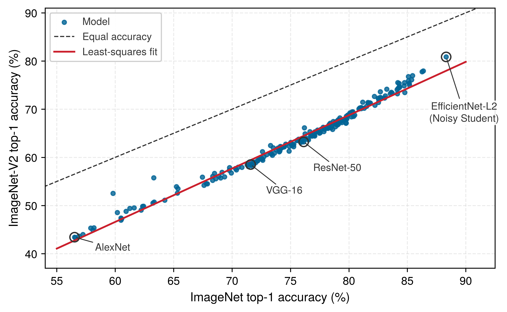
Содержание главы
Содержание
- 14 Надёжный ИИ
- 14.1 Проблема скрытых отказов
- 14.2 Реальные отказы устойчивости
- 14.3 Единый каркас устойчивого ИИ
- 14.4 Экологические сдвиги
- 14.5 Состязательные атаки
- 14.6 Состязательные защиты
- 14.7 Защиты от отравления данных
- 14.8 Устойчивость генеративных моделей
- 14.9 Системные отказы
- 14.10 Заблуждения и ловушки
- 14.11 Итоги
14 Надёжный ИИ
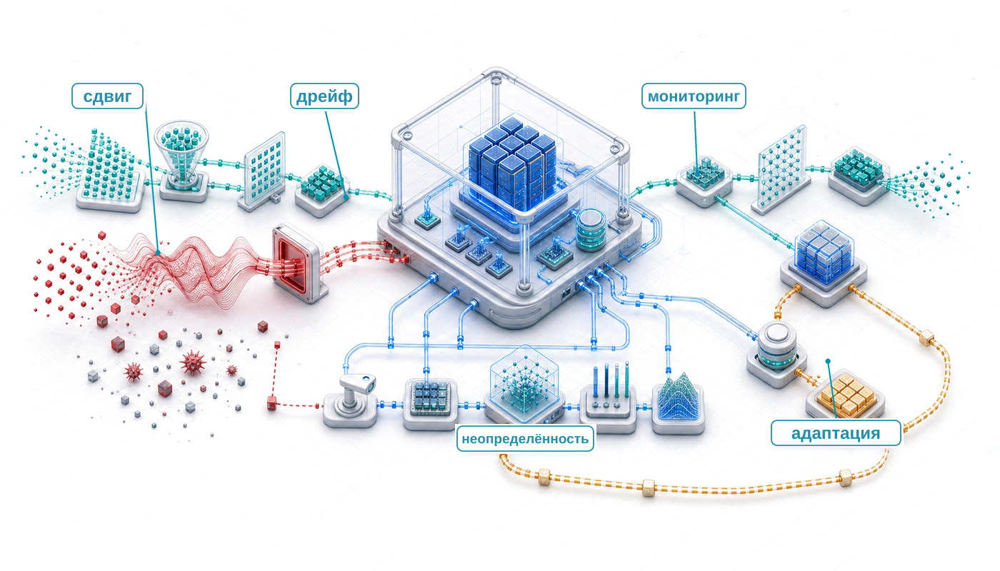
Цель
Почему системы машинного обучения могут отказывать незаметно, даже когда обычные сигналы работоспособности остаются в норме?
Модельный сервис может поддерживать стабильную задержку и доступность, пока его предсказания становятся ненадёжными. Изменения условий эксплуатации, манипулированные входные данные или испорченные вычисления могут не затронуть обычные сигналы работоспособности, позволяя ошибкам влиять на решения задолго до того, как бизнес-метрики их обнаружат. Обычное программное обеспечение тоже может отказывать незаметно; машинное обучение добавляет статистические отказы, которые успешный запрос не может выявить. В масштабе парка реплицирование модели на исправных машинах не устраняет слабость, общую для каждой копии. Трафик к тому же охватывает разные регионы, устройства и группы пользователей, поэтому приемлемая средняя производительность может скрывать серьёзный отказ в одной группе. Решение продолжать отвечать, следовательно, требует свидетельств о том, что предсказания остаются полезными в данных условиях, а не просто подтверждения доступности сервиса. Получение таких свидетельств расходует ресурсы, а реакция на них создаёт дополнительные обязательства. Дополнительные проверки могут задерживать ответы; отклонение неопределённых запросов может перегрузить операторов или резервный сервис. Заменяющая модель должна продемонстрировать приемлемое поведение до того, как парк её примет, а слишком долгое ожидание затягивает воздействие ошибок. Инженерная задача состоит в том, чтобы связать свидетельства с ограниченной реакцией, не исчерпав ресурсы, необходимые для обслуживания полезных предсказаний. Защита должна охватывать и модель, и окружающий путь данных, поскольку любая из них может сделать результат недействительным. В терминах C³ верификация расходует вычисления и коммуникацию, а координация определяет, когда свидетельства должны запускать расследование, откат или остановку.
Цели обучения
- Классифицировать скрытый отказ по одному из столпов устойчивости и диагностировать его источник с помощью воспроизведения входных данных, истории развёртываний и системной телеметрии
- Различать ковариативный сдвиг, сдвиг разметки и концептуальный дрейф и оценивать, когда свидетельства дрейфа оправдывают обновление модели
- Применять кривую «риск–покрытие» для выбора порога селективного предсказания и оценки нагрузки на резервный механизм, сопоставляя её с калибровкой и с conformal-покрытием при условии обменности
- Оценивать состязательные атаки по уровню доступа атакующего и выбирать защиты, такие как состязательное обучение, сертификация и обнаружение входных атак
- Выбирать многоуровневые защиты от отравления, сочетающие контроль источников, обнаружение аномалий, устойчивое обучение и проверки после обучения
- Оценивать надёжность генеративных моделей по указанному источнику свидетельств, трактуя энтропию, самосогласованность и защитные фильтры выходных данных как тарифицируемые сигналы маршрутизации
- Оценивать решения по устойчивости против бюджетов точности на чистых данных, вычислений, задержки и ёмкости резервного механизма
14.1 Проблема скрытых отказов
Модель компьютерного зрения автомобиля, валидированная на солнечных дорогах, может стать ненадёжной, когда снег меняет визуальное распределение, но чтение покрытого снегом знака «стоп» как знака ограничения скорости или классификация грузовика как неба не обязаны порождать исключение или трассировку стека. Модель прогнозирования спроса не завершается с ошибкой, когда выдаёт дико неточные предсказания, а система медицинской диагностики не отключается, когда незаметно возвращает неверные классификации, опасные для жизни пациентов. Поскольку эти ошибки проявляются в предсказаниях при том, что телеметрия инфраструктуры остаётся зелёной, этот скрытый режим отказа требует ML-специфичных поведенческих проверок наряду с обычными программными проверками. Приведёт ли ошибка предсказания к небезопасному действию, зависит от окружающих систем восприятия, планирования и отката, поэтому инженерия устойчивости оценивает и ограничивает поведение при заданных эксплуатационных нагрузках, включая сдвиг распределения, шум датчиков, состязательные входные данные, а также аппаратные и программные сбои, при которых сервис выглядит исправным, но его ответы становятся ненадёжными.
Поэтому Robust AI занимает строку Assurance в стеке парка (Рисунок 4), где парк устанавливает, что его результаты можно доверять. Эта строка расположена непосредственно над Operations в основании полосы управления (governance band), и устойчивость делит её с безопасностью и приватностью. Безопасность и приватность устанавливают, кто может манипулировать моделью, извлекать из неё данные или делать через неё выводы, и какие механизмы контроля ограничивают такой доступ или раскрытие. Устойчивость добавляет поведенческое требование на случай, когда входные данные, распределения данных, аппаратное или программное обеспечение отклоняются от условий, предполагавшихся при валидации, потому что только поведенческий тест показывает, как модель реагирует вне своего обучающего распределения. В пределах заданного рабочего конверта парку нужны свидетельства того, что предсказания или резервные действия остаются приемлемыми. Состязательные примеры — входные данные, специально созданные, чтобы вызвать ошибку, — становятся возмущениями, которые нужно измерять и защищаться от них, а при определённых допущениях доступна сертификация. Несостязательный дрейф и сбои требуют собственных методик оценки. В эксплуатации сначала выполняется диагностика источника отказа с использованием сигналов, разработанных в Глава 14.9.2. Затем тесты на сдвиг по популяции дают свидетельства изменения окружения, а оценка, специфичная для атак, проверяет, способно ли намеренное манипулирование обойти модель или её защиты.
Контрольные точки и восстановление возвращают состояние исполнения, а контроль доступа обеспечивает права на границе системы. Эти механизмы не устанавливают, что предсказания остаются полезными. Состязательный вход может удовлетворять контракту интерфейса, распределение данных может дрейфовать за пределы валидированных условий модели, а сбой предобработки может изменять входные данные, не останавливая инференс. Восстановление может вернуть чистую контрольную точку после некоторых сбоев, но поведенческие проверки должны определить, соответствует ли восстановленная система своим критериям приемки. Поэтому обнаружение, диагностика и восстановление при сбоях нуждаются в свидетельствах и об исполнении, и о качестве предсказаний, что мотивирует точное определение Robust AI:
Определение 14.1: Надежный ИИ
Robust AI — измеримое системное свойство, состоящее в том, что предсказания модели остаются валидными (в заданных границах ошибки) при сдвиге распределения, состязательном возмущении и аппаратных или программных сбоях — в отличие от средней точности, достигаемой в идеальных условиях независимых и одинаково распределённых (i.i.d.) данных.
- Значимость: устойчивость квантифицируется относительно явного рабочего множества или множества угроз. Сертифицированный классификатор может доказать, что его предсказание не изменится для любого входа из заданного множества возмущений, например
-шара фиксированного радиуса вокруг одной тестовой точки (каждая координата входа изменена не более чем на этот радиус). Эмпирические стресс-тесты вместо этого измеряют производительность на названных повреждениях, сдвигах или атаках, не доказывая поведение вне оценённых случаев. - Различие: стандартная генерализация измеряет среднюю точность на отложенных i.i.d. данных из обучающего распределения. Устойчивость измеряет поведение при заданных отклонениях от этого распределения, включая естественные сдвиги, семантические преобразования, физические изменения, вредоносные запросы и возмущения, ограниченные нормой. Некоторые оценки наихудшего случая выполняются внутри формального множества; другие дают эмпирические свидетельства по выборке развёртывания.
- Типичная ошибка: распространённое заблуждение состоит в том, что устойчивость можно добавить как пост-хок слой мониторинга к любой существующей модели. Мониторинг поставляет свидетельства о наблюдаемом поведении; он не устанавливает сертифицированную устойчивость. Укрепление на этапе обучения и защиты на этапе обслуживания требуют каждый раз оценивать полную защищённую систему против заданной модели угроз. Сертификат действует только внутри заявленного множества возмущений и допущений.
Две модели могут совпадать на всех чистых входах и всё же различаться в том, насколько далеко вход может сместиться, прежде чем сменится его метка. В Рисунок 1 каждая размеченная точка окружена одинаковым радиусом возмущения — наибольшим изменением входа, которое допускает оценка. Вертикальная граница A удерживает любое допустимое изменение на правильной стороне, тогда как наклонная граница B проходит через окрестность точки
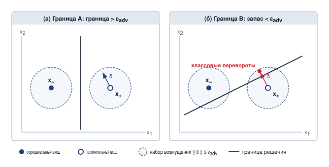
Три категории упорядочивают эти скрытые отказы и требуемые ответы на них; далее в главе они называются тремя столпами устойчивого ИИ. Первый — изменение окружения — включает сдвиги распределения, концептуальный дрейф и меняющиеся условия эксплуатации. Модель, обученная на прошлогодних паттернах транзакций, может стать ненадёжной по мере изменения поведения клиентов. Мониторинг должен установить, влияет ли изменение на качество предсказаний, прежде чем стратегия адаптации сможет на него отреагировать.
Вторая категория — атаки на уровне входных данных: злонамеренное манипулирование, нацеленное непосредственно на поведение модели через данные, которые она получает или по которым обучается. Состязательные атаки, попытки отравления данных и инъекции промптов стремятся вызвать неверные предсказания или несанкционированное поведение. Аутентификация и контроль доступа ограничивают, кто может отправлять данные и какие действия разрешает система, но авторизованный вход всё равно может индуцировать неверный результат. Поэтому поведенческая оценка должна исследовать манипулирование, возможное в пределах оставшегося доступа.
Третья категория — сбои на уровне системы: аппаратные отказы, ошибки программного обеспечения, отказы зависимостей и ошибки среды исполнения, которые повреждают механизмы вокруг модели. Дефекты ПО и конвейеров принадлежат этому столпу по происхождению, но их симптомы могут усиливать, маскировать или имитировать две другие категории, поэтому они также пронизывают всю таксономию. Баги, дефекты проектирования и ошибки реализации в алгоритмах, библиотеках и фреймворках распространяются по системе, создавая системные уязвимости1, выходящие за рамки отказов отдельных компонентов. Баг предобработки может создать искусственные сдвиги распределения; численная ошибка может испортить поведение модели так, что это не отличить от состязательной атаки; состояние гонки может повредить выученные представления. Поскольку эти сбои возникают в системном слое, их детальная таксономия и стратегии смягчения рассмотрены в Отказоустойчивость; в этой главе внимание уделено тому, как сбои системного уровня взаимодействуют с изменениями окружения и атаками на уровне входных данных.
Подходящая защита зависит от того, где работает система и какие отказы она должна сдерживать. Облачный сервис может располагать ёмкостью для избыточного исполнения, превышающей лимит энергопотребления и памяти краевого устройства, но дополнительные реплики не устраняют слабость модели, общую для всех копий. Краевые устройства могут сосредоточить проверки на критических путях инференса и использовать валидированный локальный резервный механизм. Оба сценария требуют измеряемой защиты в пределах своих ресурсов и лимитов времени отклика.
Каждая защита расходует ресурсы там, где она работает. Коррекция ошибок добавляет хранение и проверочные операции, избыточная обработка повторяет вычисления, а мониторинг использует вычислительную ёмкость и телеметрию. Их влияние на пропускную способность, энергию и время отклика зависит от реализации и рабочей нагрузки. Решение об устойчивости сопоставляет эти измеренные затраты с обнаруженными или сдержанными отказами и с последствиями оставшихся ошибок. Поскольку каждый уровень конвейера — от валидации входа и обучения до обнаружения дрейфа и изоляции сбоев — несёт часть этой стоимости, устойчивость ограничивает архитектуру, а не оборачивает готовую систему, а игнорирование этого ограничения приводило к тяжёлым отказам в облачных, краевых и встроенных развёртываниях.
14.2 Реальные отказы устойчивости
Отказ общего хранилища останавливает сервис полностью, тогда как ошибка восприятия или классификации оставляет его работать с небезопасным результатом. Разделение этих двух исходов гарантирует, что успешный запрос или работающий процессор никогда не будут приняты за свидетельство валидности предсказания. Хотя преднамеренные атаки на уровне входных данных лучше всего задокументированы контролируемыми полевыми исследованиями из Глава 14.5, эксплуатационные отказы в реальных условиях демонстрируют остальные столпы на трёх уровнях развёртывания. Облачные парки выявляют скрытые повреждения аппаратуры во время обучения и вредные ошибки на срезах популяции — подмножествах входных данных, таких как демографическая группа или условие эксплуатации, — скрытых внутри агрегированной точности. Краевые транспортные средства показывают отказ восприятия вне валидированного рабочего конверта, когда нет времени на удалённый резервный механизм. Встроенные контроллеры демонстрируют опасность, которую наследует обученный компонент, когда ложный сигнал датчика приводит к необратимому физическому действию. Даже в исправном облачном сервисе модель может незаметно отказывать на критическом срезе популяции, пока её агрегированные бенчмарк-метрики выглядят сильными.
Практический случай 14.1: Метка, вскрывшая пробел в тестировании (2015)
Контекст: в июне 2015 года Google Photos использовал автоматическую разметку изображений для организации фотографий пользователей (Kasperkevic 2015 г.).
Механизм: глубокий свёрточный классификатор изображений поместил фотографии Джеки Алсине и её темнокожей подруги под тегом альбома «Gorillas» — тяжёлый отказ на уровне среза. Этот отказ демонстрирует, почему агрегированная top-1/top-5 точность на полном тестовом наборе не может установить приемлемое поведение для высокорисковых срезов популяции.
Воздействие: громкая ошибочная классификация вызвала общественное возмущение и вскрыла крупный пробел в валидации безопасности многоклассовых моделей компьютерного зрения.
Исправление: Google отключил метку «gorilla», блокируя симптом, не продемонстрировав, что сам классификатор был исправлен.
Системный урок: устойчивость производственного ML нельзя определять агрегированной точностью тестового набора. Высокорисковые задачи классификации требуют оценки на уровне срезов и реакции сервиса на вредные ошибки. Автоматические фильтры токсичности и валидированные резервные механизмы — кандидаты в механизмы контроля, чьё покрытие должно проверяться против конкретного отказа.
14.2.1 Отказы облачной инфраструктуры
Облачные сервисы опираются на скрытое допущение, что общая зависимость остаётся и доступной, и корректной. Отказ AWS S3 в 2017 году показывает знакомую половину этого допущения: общая зависимость хранилища отказала, и исправные сами по себе сервисы остановились.2 (Amazon Web Services 2017 г.) Отказ как минимум объявляет о себе. Проблема устойчивости — другая половина: когда зависимость продолжает работать, но возвращает правдоподобные повреждённые данные, и сервис продолжает отвечать, пока неверные результаты распространяются.
Скрытое повреждение данных (SDC) — когда аппаратура возвращает неверное значение, не поднимая никакой ошибки, — и есть тот случай. Инцидент с распаковкой, разобранный в Физика незаметного повреждения, демонстрирует сигнатуру этого отказа. Дефектный CPU возвращал ноль при вычислении размера валидного файла, из-за чего конвейер распаковки пропускал файлы в выводе, хотя системные логи и логи ядра не показывали никаких неисправностей (Dixit и др. 2021 г.). Иллюстрация обучения из того же раздела (Рисунок 7) прослеживает, как необработанное повреждение может проникнуть в градиенты, веса и позднейшие контрольные точки. При распределённом ML-обучении повреждённый градиент или активация могут исказить состояние оптимизатора, распространиться на каждую реплику через синхронизацию градиентов и сохраниться в позднейших контрольных точках. Поэтому радиус поражения растёт с дизайном синхронизации и контрольных точек, а восстановление может потребовать отката к последней чистой контрольной точке (Dixit и др. 2021 г.; Ma и др. 2025 г.). В обоих сценариях проверки того, что исполнение продолжается, недостаточно; оценка должна проверять валидность полученных данных или поведения модели.
↩︎ Тихое повреждение данных при обучении и его свидетельства в масштабе парка установлены в Верификация в масштабе парка.
14.2.2 Отказы на периферии и во встраиваемых системах
Облачное обучающее задание, обнаружившее тихое повреждение, может откатиться к чистой контрольной точке, тогда как периферийная система, действующая в физическом мире, не может отменить уже выданное управляющее решение. В мае 2016 года Tesla Model S, работавшая под управлением Autopilot, не распознала фуру, пересекавшую её траекторию, и на скорости шоссе врезалась в неё, не подав ни предупреждения, ни начав торможение (National Transportation Safety Board 2017 г.). Система не была валидирована для такой сцены, и ничто в её собственном поведении не сигнализировало о том, что она вышла из валидированной области. Периферийные развёртывания должны реагировать в пределах локальных ограничений по вычислениям, энергии и связи, а в автомобиле отказ восприятия или планирования может потребовать вмешательства раньше, чем на него успеет отреагировать удалённый сервис или человек-оператор. Поэтому безопасность транспортного средства зависит от условий, которые система способна обработать локально, и от резерва, доступного, когда эти условия перестают выполняться.
↩︎ Авария 2016 года, прочитанная как периферийная модель, чьим резервом был контролирующий водитель, рассмотрена в Риски соответствия, безопасности и восстановления в продакшене.
Даже когда сенсоры обнаруживают препятствие, нестабильные предсказания от кадра к кадру могут сорвать работу последующего трекинга и человеческого резерва. В марте 2018 года в Темпе, штат Аризона, испытательный беспилотный автомобиль Uber сбил насмерть пешехода (National Transportation Safety Board 2019 г.). Система обнаружила её за 5,6 секунды до столкновения, но её классификация была нестабильной. Многократные переклассификации между «vehicle», «other» и «bicycle» привели к тому, что предсказание траектории отбросило историю трекинга. Согласно итоговому расследованию, распознавание неминуемого столкновения произошло лишь за 1,2 секунды до удара. Затем система целую секунду воздерживалась от действий, не предупреждая оператора; только после этого она выдала предупреждение и запланировала плавное замедление. Оператор не успел вмешаться. Этот случай связывает восприятие, трекинг, время реакции и человеческий резерв и показывает, что обнаружение объекта ещё не означало, что система будет действовать на основе этого обнаружения безопасно.
Инспекционный дрон, обследующий линии электропередачи, аналогично может потерять надёжную локализацию, когда изменение освещения или повторяющиеся текстуры сбивают визуальную одометрию. Альтернативный путь инференса или управления даёт резервную избыточность (fallback redundancy), когда основной путь не может обеспечить требуемое решение, но её ценность зависит от независимости покрытия отказов и времени реакции. Локальный контроллер на основе сенсоров или валидированный режим посадки может оказаться полезнее удалённой модели, которая не успеет ответить до контрольного срока управления. Периферийный ИИ должен обеспечить эту реакцию в пределах ресурсов устройства; дополнительные реплики в дата-центре сами по себе не исправили бы ту же ошибку восприятия.
Встраиваемые системы могут работать через критические интервалы, в которые внешнее вмешательство слишком медленно. Удалённое обслуживание может оставаться возможным между этими интервалами, но автономная посадка или управляющий манёвр требует локальной реакции до истечения срока. Поэтому валидация должна покрывать как режимы отказа компонента, так и следующее за ними поведение системы, включая любую ML-модель в контуре принятия решений. Mars Polar Lander NASA был потерян в 1999 году, когда, по заключению комиссии по разбору, ложный сигнал касания, вероятно, отключил двигатели до посадки (NASA Mars Program Independent Assessment Team 2000 г.). Для обучаемого компонента в таком контуре управления валидация должна связывать правдоподобные отказы входов и сенсоров с действиями, которые они могут вызвать, потому что исчерпывающее тестирование всех возможных входов не является осуществимым аргументом безопасности.
Коммерческая авиация демонстрирует ту же унаследованную опасность. В 2015 году после того, как Boeing обнаружил, что Boeing 787, непрерывно находящийся в работе 248 суток, может полностью потерять электропитание переменного тока, если все четыре блока управления генераторами одновременно перейдут в отказобезопасный режим,3 последовало директива летной годности FAA, и само время безотказной работы стало фактором риска (Federal Aviation Administration 2015 г.). Испытание на длительность, более короткое, чем этот интервал, не выявило бы дефект. Обучаемый компонент наследует ту же опасность всякий раз, когда развёртывание достигает условия, не охваченного его оценкой, — например, накопленного состояния, редкого сезона или необычного показания сенсора. Системы, критичные для безопасности,4 предъявляют жёсткие требования к надёжности именно потому, что такие латентные опасности проявляются только в эксплуатации. Во всех этих сценариях устойчивость зависит от связывания сигнала отказа с ограниченной по времени реакцией, и каркас парка должен различать источник этого сигнала до выбора защиты.
14.3 Единый каркас устойчивого ИИ
Как показывают эти инциденты, низкоуровневый отказ и изменение среды могут давать одну и ту же тихую деградацию. Один перевёрнутый бит экспоненты в памяти ускорителя масштабирует сохранённое значение на степень двойки и может превратить обученный вес из 0.042 в конечное значение около
14.3.1 Общее состояние и поверхности отказов в масштабе парка
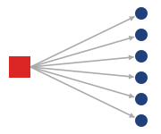
Один повреждённый градиент в AllReduce доходит до весов каждой реплики.
Те же механизмы, которые делают парк эффективным, также разделяют состояние или работу между множеством машин. Поэтому в распределённом обучении один узел, передающий повреждённые градиенты во время операции AllReduce, может отравить глобальные веса модели у каждого рабочего узла. Механизмы обнаружения и восстановления отказов поддерживают работу обучающих заданий и обеспечивают доступность на этапе инференса, однако восстановленная контрольная точка или отзывчивая реплика ещё не гарантируют, что модель ведёт себя приемлемо на текущих входах. Устойчивость расширяет аргументацию восстановления до плавной деградации, при которой сокращённый сервис всё ещё должен соблюдать валидированный поведенческий контракт, когда входы состязательные или компоненты деградируют. Сдерживание разделяемого обучающего состояния требует свидетельств того, что повреждённые обновления обнаруживаются или изолируются. Протоколы византийской отказоустойчивости охватывают случай, когда участник присылает произвольные или злонамеренные значения, а не просто останавливается. Обычные аппаратные повреждения также требуют уже установленных для парка механизмов диагностики отказов и восстановления.
↩︎ Синхронизация градиентов через AllReduce, при которой каждая реплика получает один и тот же редуцированный градиент, установлена в Синхронизация градиентов.
↩︎ Византийские отказы, при которых компонент возвращает произвольные значения вместо остановки, установлены в Византийские отказы.
Обслуживание повторяет то же разделение на этапе инференса. Формирование батчей, маршрутизация запросов и конвейерно-параллельные стадии размещают запросы множества пользователей на одной реплике модели или одной стадии, поэтому повреждённая реплика или стадия возвращает неверные ответы каждому запросу, проходящему через неё, пока её проверки работоспособности всё ещё проходят. Когда причина намеренная, а не случайная, классификация векторов угроз в Классификация векторов угроз — по доступу, знанию и времени атакующего — задаёт ту модель атакующего, которую защита должна предполагать.
↩︎ Формирование батчей, маршрутизация запросов и конвейерно-параллельное обслуживание установлены в Обслуживание в масштабе.
Крупные плотные модели усиливают эти риски. Плотный трансформер класса GPT-3, стоящий здесь вместо эталонной модели Архетипа A (GPT-4/Llama-3), имеет 175B параметров и требует только 350 GB для одних весов при точности инференса FP16/BF16 (
Дефицит ёмкости также подталкивает команды к сжатию модели. Техники эффективности — INT8-квантизация, прореживание (pruning) и дистилляция знаний — позволяют уместить модель на меньшем числе устройств или обслуживать больше запросов, но они меняют само развёрнутое вычисление, поэтому каждую из них нужно проверять на соответствие свидетельствам устойчивости, собранным для несжатой модели. Ключевая величина здесь — запас устойчивости (robustness margin) модели: объём возмущения входа, численной ошибки или изменения представления, который модель может поглотить до изменения предсказания. Каждая из этих техник может сократить этот запас, поэтому сжатая модель, совпадающая с оригиналом по точности на чистых данных, тем самым ещё не показала, что её запас уцелел. Оптимизированной системе, следовательно, нужны свидетельства инженерии надёжности5 того, что её механизмы обнаружения и восстановления ошибок покрывают отказы её операционной модели и что итоговые предсказания по-прежнему удовлетворяют сервисному контракту.
Масштаб также увеличивает вероятность того, что тихое повреждение где-то произойдёт в парке. По модели парка из Верификация в масштабе парка,
14.3.2 Три столпа устойчивого ИИ
Когда частота ошибок модели растёт без прерывания сервиса, инженер должен определить, сдвинулось ли поведение клиентов, возмутил ли кто-то входы или повредил ли ускоритель вес, — прежде чем выбирать защиту. Каждый из трёх столпов, названных в начале главы, раскладывается на конкретные подтипы отказов, и каждый подтип сопоставлен с защитой, которая на него нацелена (Рисунок 2).
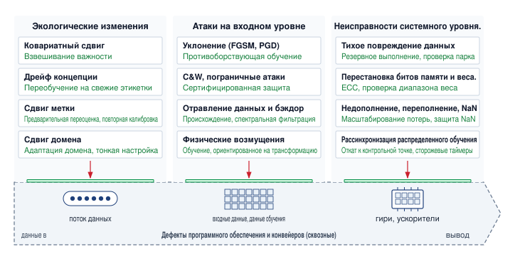
Названия подтипов менее важны, чем свидетельства, которые производит каждый столп, поскольку именно свидетельства наблюдает оператор и именно они выбирают семейство защитных механизмов. Экологические сдвиги могут приводить к статистическим различиям между производственными данными и референсной совокупностью. Эти различия служат поводом для расследования, однако монитор распределения входных данных не способен обнаружить каждое изменение в соотношении между входами и исходами. Мониторинг, перекалибровка и дообучение решают разные части этой задачи; свидетельства об исходах помогают определить, какой ответ уместен.
Атаки на уровне входных данных намеренно нацеливаются на поведение модели посредством специально сконструированных входов или отравленных обучающих примеров. Аномальные входы могут вызвать подозрение, но эффективная атака вовсе не обязана выдавать себя узнаваемым возмущением или статистическим выбросом. Adversarial training, сертификация и санитизация входов адресуют разные модели угроз.
Системные сбои берут начало в аппаратном обеспечении, коде, фреймворках и инфраструктуре развёртывания, поддерживающих МЛ-системы: численная нестабильность, ошибки предобработки, состояния гонки и рассинхронизация реплик, несовпадение зависимостей, а также аппаратные сбои вроде переключения битов. Многие из них порождают явные ошибки или простои, но сбой, при котором служба продолжает отвечать, проявляется как изменившееся поведение модели, которое может сойти за любой из двух других столпов. В Глава 14.9 разрабатываются диагностические сигналы, позволяющие разделить эти маскарадные проявления после того, как первые два столпа были обработаны. Все три столпа разделяют один и тот же операционный контур управления: обнаружение, деградация, адаптация.
↩︎ Механика аппаратных и программных сбоев, а также их обнаружение и восстановление, изложены в Отказоустойчивость.
14.3.3 Общие принципы устойчивости
Некалиброванный монитор, срабатывающий на безобидные колебания трафика, с тем же успехом может запустить ненужное дообучение или затопить резервную службу запросами, как необнаруженный сбой способен исказить предсказания. Для всех трёх категорий общая инженерная задача состоит в том, чтобы решить, какой сигнал запускает какой ответ. Устойчивым системам нужны порог обнаружения, путь деградации и механизм адаптации, каждому из которых назначен явный бюджет затрат.
Обнаружение и мониторинг составляют фундамент этой стратегии, и каждый столп требует своего сигнала, поскольку каждый отказ берёт начало в своём слое. Мониторинг на уровне системы отслеживает метрики аппаратуры и среды исполнения на предмет температурных аномалий, колебаний напряжения, ошибок памяти или скрытого повреждения данных; обнаружение может ограничить дальнейшее распространение, хотя первый наблюдаемый симптом может проявиться уже после повреждённого обновления состояния. Там, где системные мониторы следят за «машинерией», мониторинг атак на уровне входов использует статистические тесты и тесты в пространстве активаций, чтобы помечать подозрительные состязательные входы и попытки отравления для отклонения или расследования. Мониторинг экологических сдвигов сравнивает производственный трафик с референсными распределениями с помощью таких инструментов, как максимальное среднее расхождение (MMD),6 индекс стабильности совокупности (PSI) или критерий Колмогорова — Смирнова (KS), — статистик, развитых в Глава 14.4.2. У каждого из этих мониторов есть своя цена. Механизмы устойчивости должны получать бюджет, а не просто включаться, ведь каждый детектор обменивает чувствительность на ложные срабатывания, задержку и накладные расходы на вычисления.
Плавная деградация превращает обнаружение в ограниченный рабочий режим вместо краха: происходит спуск по заранее объявленной лестнице более дешёвых моделей и более простых признаков вместо полного отказа. Устойчивость добавляет к этой лестнице поведенческое условие: деградировавшая модель и её резервные варианты должны по-прежнему удовлетворять критериям приёмки службы в условиях отказа, который их вызвал. Поэтому квантованная реплика, продолжающая обслуживать запросы при падении пропускной способности, требует собственной валидации в деградировавших рабочих условиях, поскольку квантизация может сузить запас устойчивости даже тогда, когда точность на чистых данных сохраняется. Ансамблевые резервные системы обеспечивают обслуживание только в том случае, если альтернативные модели покрывают соответствующий отказ и укладываются в срок обслуживания. Их качество при этом отказе, задержка переключения и пропускная способность при перенаправленном трафике требуют оценки, и одно лишь членство в ансамбле ни одно из этих свойств не устанавливает.
↩︎ Плавная деградация как лестница резервных моделей и признаков, каждая из которых валидирована до того, как понадобилась, изложены в Корректная деградация.
Адаптивный ответ замыкает контур, изменяя поведение системы, когда сигнал сохраняется, — например, включая коррекцию ошибок, добавляя предобработку входов или обновляя параметры модели, — так что устойчивость оказывается непрерывной подстройкой, а не однократной конфигурацией. В рамках трёх столпов Рисунок 2 память с кодами коррекции ошибок (ECC) и избыточное исполнение обнаруживают сбои, проверки диапазонов весов и откаты к контрольным точкам локализуют ущерб, а дообучение или adversarial training адаптируют модель. Следовательно, каждому столпу нужны собственные версии всех трёх механизмов, и ни одна отдельная защита не покрывает всю таксономию.
План оценки должен сохранять эти различия, и ему нужна одна строка, которая вовсе не является столпом. Мониторы совокупности спрашивают, изменился ли трафик в целом, тогда как обслуживающая система должна также решать — запрос за запросом, — лежит ли данный конкретный вход внутри продемонстрированной компетентности модели. Инструменты для этого по-запросного решения — калибровка, оценки «вне распределения» (OOD) и избирательное предсказание с его кривой риск–покрытие — разрабатываются в Глава 14.4.4, после статистик дрейфа, которые они дополняют. Каждому классу отказов требуется собственный минимальный объём свидетельств (Таблица 1), поэтому успешно пройденный тест в одной строке не может превратиться в утверждение об устойчивости для другой. По-запросные проверки отделяют входы «около-OOD», похожие на обучающие данные, но лежащие вне их классов или условий, от входов «далеко-OOD», взятых из неродственных источников. Состязательная оценка измеряет устойчивую точность при заданной атаке и сертифицированную точность там, где доступно доказательство (Глава 14.6.1.1), а оценка отравления проверяет участников, использующих фальшивые идентичности (сибиллов) или посылающих произвольные обновления (византийские участники) (Глава 14.7).
| Класс отказа | Оценочный набор или вмешательство | Основные свидетельства | Требуемый срез | Граница решения |
|---|---|---|---|---|
| Естественный сдвиг | Данные, отложенные по времени, географии, устройствам и среде | Точность или потери, ошибка калибровки, статистики дрейфа | Критические когорты и хвостовые условия | Продолжить, расследовать, перекалибровать, дообучить или откатиться |
| По-запросная компетентность | Ошибки «в распределении» плюс входы около- и далеко-OOD | Кривая риск–покрытие, OOD-оценка и нагрузка на резервный вариант | Высокозначимые классы запросов | Ответить, перенаправить, воздержаться или отклонить |
| Состязательная манипуляция | Атаки белого ящика, чёрного ящика, переноса и физические, соответствующие модели угроз | Устойчивая точность по бюджету атаки; сертифицированная точность, где доступна | Целевые классы и возможности атакующего | Принять, усилить защиту, ограничить или заблокировать выпуск |
| Отравление | Сценарии компрометации источника, переворота меток, бэкдоров, фальшивых идентичностей (сибиллов) и византийских участников | Метрики на чистых данных и успеха атаки, потери на срезах, полнота детектора | Источники, участники и субпопуляции | Карантин, исключение, перевзвешивание или откат |
| Системный сбой | Внедрение сбоев по путям данных, среды исполнения, ускорителя и сети | Доля скрытых ошибок, задержка обнаружения и успешность восстановления | Коррелированные и многокомпонентные сбои | Повторить, изолировать, деградировать или безопасно отказать |
14.3.4 Интеграция по всему МЛ-конвейеру
Фильтр на этапе обслуживания не может починить модель обнаружения мошенничества, обученную на отравленных записях, а фильтр на этапе приёма данных не способен остановить атакующего, возмущающего входы в момент инференса. Поэтому устойчивость требует свидетельств на протяжении всего жизненного цикла МЛ, с взаимодополняющими средствами контроля на каждом этапе, применяющими принцип эшелонированной защиты к поведению модели. Проверки на приёме данных помечают некорректные или статистически аномальные записи до обучения, защиты на этапе обучения нацелены на определённые возмущения, валидация проводит стресс-тесты поведения на данных вне распределения в пределах заявленного конверта развёртывания, а фильтры и мониторы этапа обслуживания следят за живым трафиком. Прохождение проверки одного этапа не говорит ничего об отказах, которые должен тестировать другой этап.
↩︎ Эшелонированная защита, требующая независимых слоёв так, чтобы преодоление одного не преодолевало систему, изложены в Каркас стратегии защиты.
Производственный конвейер обнаружения мошенничества поэтому оценивает свои проверки приёма данных против отравленных обучающих записей и свои фильтры этапа обслуживания против попыток обхода отдельно, и ни одно из них не гарантирует перехвата. Слой мониторинга действует как страховочная сетка: обнаруживает дрейф распределения — например, внезапный сдвиг сумм транзакций или геолокаций пользователей — и открывает расследование. Дообучение следует только тогда, когда валидированные свидетельства об исходах, анализ первопричин и шлюз выпуска показывают, что обновление модели — уместный ответ.
Аппаратные сбои (переходные, постоянные и перемежающиеся) и механизмы парка для их обнаружения и восстановления классифицированы в Аппаратные отказы в масштабе парка. Оценка устойчивости добавляет к этим механизмам поведенческий тест: после обнаружения сбоя или повторной попытки запроса выход должен по-прежнему удовлетворять критериям приёмки модели. Одна лишь повторная попытка не устанавливает, что результат корректен. То же различие между исправностью службы и качеством предсказаний действует, когда аппаратура работает правильно, а мир эволюционирует за пределы обучающих данных.
Контрольная точка 14.1: Диагностика сигнала неисправности
Унифицированная структура требует определить, какой из трёх столпов произвёл беззвучный отказ, прежде чем выбирать защиту, и признать, что программные сбои могут маскироваться под любой из них.
Classifying the threat
Choosing the response
14.4 Экологические сдвиги
Модель кредитного скоринга или рекомендаций, обученная на поведении пользователей прошлого квартала, может терять точность по мере движения сезонного спроса, демографии или экономических условий, потому что обучающие данные фиксируют прошлое состояние мира, а производственный трафик продолжает меняться. Экологические сдвиги возникают всякий раз, когда распределения данных, поведение пользователей или контексты развёртывания отклоняются от обучающей совокупности, и сдвиг становится отказом устойчивости, когда поведение модели перестаёт удовлетворять контракту службы. Изменившиеся условия могут также обнажить латентные программные дефекты или изменить эффективность состязательной защиты, поэтому выбор правильного вмешательства требует сначала разделить, какой статистический компонент процесса порождения данных сместился.
14.4.1 Сдвиг распределения и концептуальный дрейф
Это разделение необходимо уже тогда, когда модель переносится между площадками без какого-либо изменения исходной задачи. Модель медицинской диагностики, обученная на рентгеновских снимках одной больницы и развёрнутая в клинике с другим медицинским оборудованием, сталкивается с изменённым контрастом и шумом даже для одних и тех же медицинских состояний. Это различие между обучающей и развёртыванием совокупностями — сдвиг распределения; снижает ли он диагностическую точность, требует оценки на данных клиники. Переход к совершенно иному источнику — новой больнице, сенсору или региону — часто называют сдвигом домена, и он может сочетать несколько типов сдвига, различаемых ниже.
Сдвиг распределения принимает три геометрические и статистические формы (Рисунок 3). Входы могут мигрировать в незнакомую область пространства признаков (панель a), априорные частоты меток могут перекашиваться (панель b), или само исходное отображение может меняться (панель c). Здесь
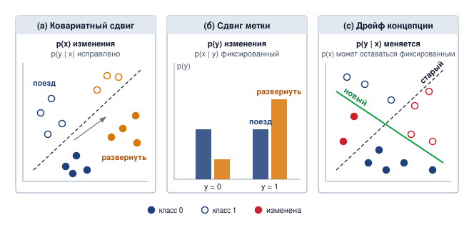
Технические категории
Модель восприятия транспортного средства, обученная преимущественно на дневных изображениях, сталкивается с незнакомой пиксельной статистикой ночью, а также в дождь, снег и туман, даже когда физические объекты, соответствующие каждой метке, не изменились. Эта форма сдвига — ковариативный сдвиг, который меняет распределение входов при фиксированном соотношении между входами и выходами (Quiñonero-Candela и др. 2009 г.). Трактовка изменения при развёртывании как ковариативного сдвига требует допущения, что условное отношение разметки остаётся фиксированным; одно лишь неизменное имя задачи этого допущение не устанавливает. Потеря точности зависит от сдвига освещённости, сенсора и того, сколько данных о неблагоприятных условиях содержалось в обучающем наборе, поэтому каждое развёртывание должно измерять её на отложенных ночных и погодных срезах, а не полагаться на опубликованную цифру. При допущении ковариативного сдвига изменившаяся совокупность может помещать больше вероятности в области, которые модель выучила плохо, как показано на панели (a) Рисунок 3. Агрегированная точность может тогда снижаться, хотя правило разметки остаётся фиксированным. Это изменение в распределении ошибок, а не утверждение, что каждый затронутый запрос становится неверным. Поскольку правило разметки фиксировано, в качестве средства исправления можно перевзвешивать существующие размеченные данные, а не размечать их заново. Взвешивание по важности назначает каждому обучающему примеру вес, равный тому, насколько более или менее вероятно его вход при трафике развёртывания, чем при обучающем трафике, так что взвешенные обучающие потери оценивают потери на трафике развёртывания. Эта оценка верна лишь там, где обучающие данные покрывают новые входы, поскольку никакой вес не может восстановить область, не содержащую обучающих примеров.
↩︎ Монитор дрейфа парка, который должен отличать изменение распределения входов от изменения вход-выходного соотношения, изложен в Обнаружение дрейфа; различаемые им ковариативный, меточный и концептуальный сдвиги определены здесь.
Даже сдвиг, который задумывался как отсутствие сдвига вовсе, стоит точности. Recht и др. (2019 г.) воссоздал валидационный набор ImageNet спустя десятилетие после оригинала, следуя исходному протоколу сбора и разметки, а затем оценил существующие модели на новых изображениях. В более обширном тестбеде Taori и др. (2020 г.) каждая из 212 моделей, достигающих не менее 55 процентов на исходном наборе, показывает на новом наборе более низкий результат — на 7 до 14 пунктов с медианой 12 (Рисунок 4). Потеря следует почти прямой линии, поэтому модель, лучшая на исходном наборе, лучше и на новом, однако ни архитектура, ни рецепт обучения, ни объём дополнительных данных не закрывают разрыв. То, что отличает два набора, не является очевидным визуальным изменением, но обходится дорого каждой модели. Для парка точность, измеренная на отложенных данных из обучающего распределения, — это, следовательно, оптимистичная оценка точности на следующей популяции входов, а не предсказание её.
Ковариативный сдвиг смещает входы, тогда как истинное отображение
Определение 14.2: Концептуальный дрейф
Концептуальный дрейф — это развёртываемый подтип сдвига распределения, при котором статистическая связь
- Значимость: Он вызывает скрытую деградацию модели, потому что историческое отображение, выученное моделью, больше не отражает текущую реальность. Он также сокращает время, в течение которого модель может обслуживать запросы до требуемого переобучения, поэтому модели обнаружения мошенничества, рекомендательные системы и другие модели, зависящие от поведения, могут нуждаться в периодическом переобучении или перекалибровке по мере изменения противников, пользователей и политик. Стоимость устранения может варьироваться от перекалибровки или инкрементального дообучения (fine-tuning) до полного цикла обучения. Более быстрый дрейф может повышать амортизированную стоимость одного предсказания, поскольку устранение повторяется чаще, хотя не всякое устранение стоит столько же, сколько исходное обучение.
- Отличие: При ковариативном сдвиге
меняется, а остаётся стабильным, поэтому передискретизация или перевзвешивание могут помочь там, где эталонные данные покрывают новые входы. Обнаружение одного лишь дрейфа данных не устанавливает, что условная связь осталась фиксированной. Концептуальный дрейф вместо этого требует адаптации к новому , обычно с использованием свежих эталонных (ground-truth) исходов. Это может делать концептуальный дрейф структурно более дорогим в устранении, чем передискретизация существующего размеченного распределения. - Типичная ошибка: Распространённое заблуждение состоит в том, что концептуальный дрейф можно обнаружить мониторингом статистик входных признаков. Поскольку
может оставаться полностью неизменным, мониторинг на уровне входов (PSI, KL-дивергенция по признакам) не покажет никакого сигнала. Детектор на основе исходов сравнивает предсказания с эталонными исходами и вынужден ждать этих меток, чтобы подтвердить изменение. Прокси-сигналы всё же могут обосновать расследование или локализацию до этого подтверждения.
Поскольку мониторы входов могут полностью пропустить концептуальный дрейф, классические адаптирующиеся к дрейфу обучающиеся системы следят за ошибкой на недавно размеченных примерах и сужают или расширяют своё обучающее окно, когда эта ошибка меняется, а не отслеживают статистики признаков (Widmer и Kubat 1996 г.).
Производственный детектор, полагающийся на размеченные ошибки, вынужден ждать этих исходов. Статистики входов и другие прокси-сигналы могут обосновать более раннее расследование или локализацию, но сами по себе они не устанавливают, что связь вход-выход изменилась.
Тогда как концептуальный дрейф меняет условное отображение для данного входа, структура случаев в больнице во время эпидемии, подобной пандемии COVID-19, может изменить распространённость респираторных заболеваний, тогда как рентгенологическая картина внутри каждого диагноза остаётся стабильной. Эта форма — сдвиг меток (label shift), при которой маргинал меток
Поскольку внутриклассовое распределение признаков
В отличие от состязательных атак, требующих злонамеренного умысла, эти три формы сдвига возникают органически: язык пополняется новым сленгом, датчики стареют, рыночные условия меняются. Когда развёрнутая модель активно влияет на поведение пользователей, как при обнаружении мошенничества, рекомендательных движках или кредитном андеррайтинге, сдвиг перестаёт быть чисто экзогенным. Инвариант социотехнической обратной связи (принцип «Инвариант социотехнической обратной связи») управляет этими перформативными средами, в которых собственные предсказания модели меняют поведение, которое она впоследствии наблюдает. В них распределение вероятностей будущих входов
Таксономия называет то, что изменилось; она не объясняет, почему изменение, оставляющее правило разметки нетронутым, всё равно может навредить. Часто причина — «ярлык» (shortcut), выученный моделью из обучающих данных, который затем обнажает ковариативный сдвиг. Классический пример — модель, обучающаяся опознавать «корову» по фону с «травой». При предъявлении коровы на песчаном пляже модель терпит неудачу. Причина в основе — ложная корреляция (spurious correlation): признак, предиктивный в обучающем наборе, но не связанный с меткой причинно.
Стандартное обучение методом минимизации эмпирического риска может благоприятствовать «ярлыку», хорошо предсказывающему метки в обучающем распределении, даже когда эта связь нарушается при развёртывании. Фон, текстура или форма могут давать полезное свидетельство, но любой из них может стать «ярлыком», когда его обучающая связь не выполняется в других контекстах. Такие техники, как групповая распределённо устойчивая оптимизация (group distributionally robust optimization), явно смягчают это, минимизируя худшую групповую потерю (например, коровы на песке) вместо средней потери. Метод требует, чтобы группы были известны или выведены заранее, и оптимизирует худшую потерю по представленным группам, не гарантируя производительность в каждом контексте. Его эффект должен оцениваться на именованных группах и на отложенных контекстах; невидимые группы остаются вне прямого покрытия этой целевой функции, поэтому развёрнутым системам по-прежнему нужны метрики дрейфа во время исполнения, чтобы обнаруживать, когда живой трафик выходит за пределы валидированного распределения.
14.4.2 Измерение дрейфа распределения
Операционная команда, переобучающаяся при каждом видимом сдвиге признаков, тратит вычисления на безобидные колебания, тогда как команда, ожидающая жалоб клиентов, пропускает скрытую деградацию в критической когорте. Решение о том, имеет ли подозреваемый сдвиг значение, требует измеренного сигнала, а не впечатления. Метрики дрейфа должны отвечать на операционный вопрос: должна ли модель продолжать обслуживание, нуждается ли она в более пристальном мониторинге или в расследовании первопричины, которое может оправдать перекалибровку, починку данных или переобучение. PSI даёт дешёвую общепарковую тревогу, запускающую это решение, а расхождения плотностей и статистические гипотезы позволяют сервису калибровать пороги, не превращая их в универсальную политику.
Индекс стабильности популяции (PSI)
Когда срабатывает общепарковая тревога о дрейфе, расследование должно определить, какой диапазон признака или категория сдвинулись, а не полагаться на единственную агрегированную оценку. PSI поддерживает этот поиск, поскольку он строится по бину за бином. Непрерывный признак сначала разрезается на диапазоны значений, а категориальный сохраняет свои категории, и Уравнение (10) определяет PSI как сумму по получающимся
Полосы общепарковой конвенции из Обнаружение дрейфа отображают значения PSI на незначительный, умеренный и крупный сдвиг. Это конвенции мониторинга, особенно распространённые в практике кредитного скоринга, а не универсальные статистические гарантии, поэтому сервис валидирует их против собственной биннизации, базовой линии, объёма выборки, предиктивных признаков и стоимости отклика, и читает PSI вместе с важностью признаков и метриками производительности модели ниже по потоку (Yurdakul и Naranjo 2020 г.).
Биннизация и обработка пустых бинов меняют то, что способен увидеть PSI, поэтому границы бинов, выбранные на эталонной выборке, должны использоваться повторно и для сравниваемой популяции. Пустой бин обрабатывается константой сглаживания
Мониторинг индекса стабильности популяции во времени, как показано на Рисунок 5, выявляет, когда популяция входов выходит из стабильной полосы в предупреждающую, а затем в полосу крупного сдвига. Это движение запускает эскалационный путь, который после корреляции с производительностью может привести к переобучению. На 41-й неделе сервис утверждает и версионирует новый эталон входов после валидации изменившейся рабочей популяции. Более низкий PSI после этого сравнивает трафик с новым эталоном, а не с исходным. Одно лишь изменение весов модели не уменьшило бы PSI входов против фиксированного эталона, и разрыв не устанавливает улучшения предсказаний.
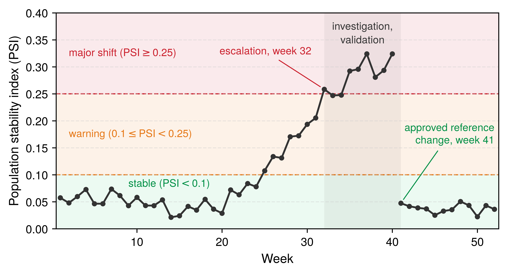
Пороговый подход автоматизирует оповещение, но не устранение проблемы. Операторам по-прежнему нужны метки или иные свидетельства исходов, анализ первопричин и оценённый сценарий реагирования до изменения модели. Принудительное разбиение непрерывных переменных на дискретные корзины также отбрасывает информацию о форме распределения, что мотивирует использование непрерывных метрик дрейфа.
Расхождение Кульбака-Лейблера
Для непрерывных признаков расхождение Кульбака-Лейблера (KL) сравнивает подогнанные плотности, а не фиксированные корзины — ценой собственных допущений и погрешностей самой оценки плотности. От базового распределения
где
Чтобы устранить асимметрию, практики часто используют расхождение Дженсена-Шеннона:
где
У расхождения KL нет общепринятых полос, сопоставимых с полосами PSI, поэтому каждый сервис задаёт свои. Сервис по борьбе с мошенничеством, разбираемый в Глава 14.4.2.4, отталкивается от полос из Таблица 2 и проверяет их на собственном историческом трафике.
| Значение |
Интерпретация |
|---|---|
| Минимальное расхождение | |
| Умеренное расхождение | |
| Значительное расхождение |
Для практического вычисления ядерная оценка плотности с гауссовыми ядрами даёт гладкие аппроксимации плотности, пригодные для интегрирования. Прямое вычисление каждого образца против каждого ядра стоит
Проверка статистической значимости
PSI и расхождение KL количественно оценивают, насколько большим кажется наблюдаемое изменение распределения; статистические проверки гипотез задают дополнительный вопрос — превышает ли наблюдаемая разница шум выборки. Простейший случай — сдвиг среднего одного признака с известным разбросом, который нормальная аппроксимация позволяет проверить напрямую.
Инженерный расчёт 14.1: Обнаружение реального сдвига распределения
Задача: модель отслеживает критически важный входной признак с известным стандартным отклонением 0.3. Базовое среднее составляло 0.5. За последние 1,000 запросов среднее сместилось к 0.55. Инженерный вопрос: является ли это случайным колебанием или реальным сдвигом распределения.
Математика: Расчёт считает базовое среднее известным, а запросы — независимыми наблюдениями с указанным стандартным отклонением. Нормальная аппроксимация затем измеряет, насколько необычным было бы наблюдаемое среднее при этом базовом распределении. Если базовое среднее само оценено по конечной выборке, его неопределённость также вносит вклад в сравнение.
- Разность средних: 0.05.
- Стандартная ошибка:
. - Статистическая значимость: сдвиг отстоит от среднего примерно на 5.3 стандартных ошибок.
- P-значение: < 0.001.
Системный вывод: статистическая значимость оценивает наблюдаемое изменение относительно вариабельности выборки в рамках базовой модели. Сдвиг в 0.05 может казаться «небольшим», но в рамках базовой модели вероятность наблюдения выборочного среднего, отстоящего от базового хотя бы так далеко, меньше 0.1 percent. В парке машинного обучения это поддерживает оповещение о дрейфе при выполнении допущений теста, но ещё не подтверждённую регрессию модели. Система должна запустить расследование, усилить мониторинг и сопоставить данные с точностью, полнотой, задержкой и бизнес-метриками. Важность признаков и величина сдвига помогают приоритизировать расследование; откат или переобучение требуют свидетельств того, что реакция устраняет причину или сдерживает возникающий риск.
Проверка среднего видит только изменение положения и требует знания разброса заранее. Двухвыборочный тест Колмогорова-Смирнова (KS) (Berger и Zhou 2014 г.) сравнивает эмпирические функции распределения (CDF) двух выборок, не предполагая какой-либо конкретной параметрической формы. Статистика теста:
где
где
Для категориальных признаков критерий согласия хи-квадрат сравнивает наблюдаемые частоты с ожидаемыми частотами при базовом распределении:
где
При одновременном мониторинге многих признаков проверка значимости должна также учитывать повторные сравнения. Применение поправки Бонферрони (деление
Анализ дрейфа в продакшн-модели обнаружения мошенничества
Рассмотрим модель обнаружения мошенничества, обслуживающую платформу электронной коммерции с двумя ключевыми входными признаками: страна пользователя (категориальный) и сумма транзакции (непрерывный). После шести месяцев в продакшене операционная команда подозревает дрейф распределения и должна решить, стоит ли переобучать модель. По исторической базовой линии команда уже настроила три триггера расследования. Первый — индекс стабильности популяции выше 0,1 на любом важном признаке. Второй — расхождение KL выше 0,05 на непрерывном признаке. Последний —
Шаг 1 анализ категориального признака
Признак страны пользователя имеет четыре названные страны и корзину «Other», и разложение его PSI по корзинам показывает, какая часть трафика сместилась (Таблица 3). Каждая строка сравнивает базовую долю с текущей, чтобы локализованные сдвиги не скрывались внутри агрегированной оценки.
| Страна | Базовая линия ( |
Текущая ( |
Вклад | ||
|---|---|---|---|---|---|
| USA | 0.45 | 0.38 | 0.07 | 0.169 | 0.0118 |
| UK | 0.20 | 0.18 | 0.02 | 0.105 | 0.0021 |
| Germany | 0.15 | 0.14 | 0.01 | 0.069 | 0.0007 |
| France | 0.10 | 0.12 | -0.02 | -0.182 | 0.0036 |
| Other | 0.10 | 0.18 | -0.08 | -0.588 | 0.0470 |
Суммирование вкладов по странам даёт
Шаг 2 анализ непрерывного признака
Для признака суммы транзакции (с логарифмическим преобразованием для приближённой нормальности) подгонка гауссовых распределений к выборкам даёт базовое распределение с
Для подогнанных гауссовых распределений KL-дивергенция имеет следующее решение в замкнутой форме. Для таких моделей плотностей оно точное; его соответствие реальным совокупностям транзакций зависит от качества подгонки.
Решение в замкнутой форме даёт
Шаг 3: статистическая значимость по KS-тесту
KS-тест на 10,000 базовых выборках и 10,000 текущих выборках суммы транзакции возвращает
Наблюдаемая статистика в несколько раз превышает это критическое значение. Ужесточение уровня в десять раз, до
Шаг 4: применение решающей схемы
В сопоставлении с настроенными командой триггерами три результата распадаются на один сигнал для мониторинга и два для исследования (Таблица 4). Сопоставление всех трёх меток бок о бок не позволяет одному статистическому отвержению обойти проверку практической значимости.
| Метка | Значение | Порог | Уровень реакции |
|---|---|---|---|
| PSI (страна) | 0.065 | Мониторинг | |
| 0.052 | Исследование | ||
| KS-тест | Исследование |
Решение: продолжать обслуживание этой модели выявления мошенничества с повышенной частотой мониторинга (еженедельной вместо ежемесячной), исследуя сдвиг суммы транзакций. Умеренная KL-дивергенция и значимый результат KS оправдывают такую проверку в рамках настроенных командой триггеров; PSI по стране не добавляет независимого оповещения. Эти мониторы устанавливают лишь то, что входное распределение сумм транзакций изменилось. Отложенные метки должны определить, остались ли правила выявления мошенничества фиксированными — сдвиг ковариат, который может устранить перевзвешивание, — или сдвинулись тоже, что является концептуальным дрейфом и требует адаптации к недавним результатам. Обновление модели становится кандидатом только если отложенные метки покажут деградацию за пределами валидированного командой допуска и исследование выявит сдвиг, который переобучение способно устранить. Численные пороги принадлежат этому разобранному сервису; другая модель должна откалибровать собственные пороги по вариативности базовой линии, последствиям отказов и пропускной способности реакции.
Схема решения о переобучении
Команда по мошенничеству оставила модель в обслуживании, несмотря на статистически значимый сдвиг, потому что она разделила сработавшую метрику и обновление весов. Обобщение этой дисциплины на весь парк даёт трёхуровневую схему решения о переобучении, которая интегрирует статистику дрейфа с мониторингом производительности, чтобы оповещения метрик не превращались в автоматические команды переобучения.
Уровень 1: автоматизированный мониторинг
Первый уровень автоматизирует только обнаружение. Три триггера команды по мошенничеству демонстрируют его общий вид. Каждый порог может изначально задаваться конвенцией, например полосами PSI, но валидируется по собственному историческому базовому уровню сервиса, а не копируется без изменений. Любой уровень значимости — это по-тестовый уровень после поправки на настроенное семейство тестов, поэтому он должен пересчитываться при добавлении признаков в семейство или изменении его бюджета ошибок. Пересечение любого порога инициирует операционное исследование, а не запускает автоматический конвейер переобучения.
Уровень 2: корреляция с производительностью
Сопоставление оповещений, откалиброванных по сценариям, с наблюдаемой производительностью даёт три случая, направляющих исследование. Если наблюдаемая деградация производительности превышает валидированный допуск сервиса и совпадает с обнаруженным дрейфом, операторы изолируют затронутые срезы данных, чтобы проверить, устраняет ли первопричину перекалибровка, починка данных или переобучение. И наоборот, когда дрейф обнаружен, а производительность обслуживания остаётся стабильной, сервис продолжает работать под усиленным мониторингом, пока команда исследует источник дрейфа. Наконец, если производительность деградирует без обнаружимого дрейфа признаков, операторы исследуют изменения, которые контролируемые маргинальные распределения могут пропустить, включая концептуальный дрейф, изменения совместных распределений признаков и сбои конвейера или модели. Неизменная приборная панель признаков не указывает, какое из этих событий вызвало ошибку.
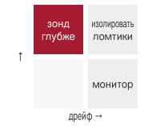
Деградация без дрейфа — тот случай, который приборная панель признаков не может объяснить.
Уровень 3: переобучение против исследования
Не всякий дрейф требует переобучения. Доказательства определяют выбор среди трёх реакций (обновление модели, сначала исследование или продолжение мониторинга), и каждая требует своего сочетания статистического сигнала, наблюдаемой производительности и внешнего контекста (Таблица 5).
| Действие | Условия срабатывания | Логика реакции |
|---|---|---|
| Обновить модель | Производительность превышает валидированный допуск по ошибкам, метки подтверждают сдвиг, анализ первопричин показывает, что обновление модели его устраняет, а офлайн- и теневая оценка проходят релизный гейт | Доказательства указывают на перекалибровку или переобучение как на надлежащую реакцию, а не просто на обнаружение изменения совокупности |
| Сначала исследовать | Срабатывает оповещение о дрейфе, откалиброванное по сценариям, при стабильной производительности; сдвиг локализован в непрогностических признаках; вероятен сезонный или разовый характер события | Сигнал оправдывает диагностику, но не заранее предопределённое исправление |
| Продолжать мониторинг | Статистика дрейфа остаётся внутри откалиброванной базовой линии сервиса, производительность в пределах допуска, и внешние данные не указывают на изменение среды | Доказательства пока не оправдывают изменение модели, но базовая линия остаётся под наблюдением |
Трёхуровневая схема превращает обнаружение дрейфа из реактивного устранения неполадок в плановое обслуживание моделей по мере эволюции производственных сред (Gama и др. 2014 г.). Ни одна полоса PSI не является универсальным правилом переобучения: большой сдвиг в непрогностическом признаке может быть безвреден, тогда как малый сдвиг в критичной для безопасности подгруппе может требовать немедленной изоляции.
14.4.3 Стратегии мониторинга и адаптации
Пример с мошенничеством сопоставлял два признака одного сервиса с одной базовой линией. Парк выполняет то же сравнение для тысяч признаков на множестве реплик, регионов и версий моделей, поэтому сама конструкция монитора определяет, что парк способен обнаружить и во что обходится обнаружение. Приведённые выше правила решения остаются в силе; новые вопросы — какую статистику и где вычислять и что менять, когда доказательства оправдывают обновление модели.
Каждая статистика несёт вычислительную и выборочную цену, и эта цена определяет, где и как часто она выполняется. В этом иллюстративном сценарии мониторинга на классе H100 одно сравнение MMD с радиальными базисными ядрами, которые оценивают сходство двух входов тем выше, чем они ближе (
Многомерному и временному трафику требуется больше, чем один скаляр на весь парк. Маргинальные мониторы признаков могут оставаться ровными, пока меняются корреляции, структура последовательностей или небольшая когорта. Поэтому производственная конструкция сочетает дешёвые по-признаковые оповещения с тестами в пространстве эмбеддингов или ядер, срезами по когортам, скользящими окнами нескольких длительностей и проверками точек изменения. Где выполняются эти статистики — на каждой реплике или централизованно из экспортированных образцов или скетчей — определяет и нагрузку телеметрии на ось коммуникаций C
↩︎ Иерархия мониторинга парка, определяющая, где выполняется статистика дрейфа и какие сигналы достигают владельца, изложена в Иерархическая архитектура мониторинга.
Когда правила Уровня 3 всё же требуют обновления модели, само обновление — бюджетированная реакция, а не автоматическая команда переобучения. Онлайн-обучение обновляет модель по последовательным наблюдениям (Shalev-Shwartz 2012 г.); сохранение прежнего поведения остаётся отдельной задачей проектирования. Бюджет адаптации зависит от размера модели, скорости дрейфа и задержки обратной связи: слишком агрессивное обновление может гнаться за шумом, а слишком медленное позволяет производительности дрейфовать. В производстве системы онлайн-обучения обычно явно ограничивают частоту обновлений, размер состояния и задержку обслуживания, не предполагая, что адаптация бесплатна. Обновление, подогнанное под новое распределение, может также стереть поведение, требовавшееся старому, — катастрофическое забывание, которое ограничивает и адаптацию на устройстве. Такие методы, как консолидация упругих весов, снижают её, штрафуя изменения параметров, важных для прежних задач (Kirkpatrick и др. 2017 г.).
↩︎ Катастрофическое забывание и техники непрерывной адаптации, его ограничивающие, изложены в Непрерывная адаптация и катастрофическое забывание.
Адаптивные ансамблевые методы поддерживают несколько моделей или гипотез и взвешивают или выбирают среди них по недавней производительности, что делает их полезными при постепенном концептуальном дрейфе (Gama и др. 2014 г.). Такой подход обменивает дополнительную сложность обслуживания и мониторинга на способность реагировать, когда одна статическая модель перестаёт соответствовать развёрнутому распределению. Когда дрейфующие данные не могут покинуть устройства или регионы, где они порождаются, то же обновление может выполняться как федеративное обучение (Алгоритмы федеративного обучения), которое переносит адаптацию к данным. Реакция на дрейф тогда оплачивается раундами коммуникации и переданными байтами в дополнение к работе по обучению, поэтому время от подтверждённого сдвига до валидированного обновления должно измеряться на федеративном пути, а не предполагаться по централизованному переобучению.
14.4.4 Компетентность на уровне запроса и селективное предсказание
Приведённые выше мониторы дрейфа и пути адаптации спрашивают, изменился ли трафик в совокупности, однако стабильный дневной PSI может сосуществовать с редким опасным запросом вне распределения, а большой сдвиг совокупности может оставить отдельные предсказания вполне обоснованными. Поскольку система обслуживания должна решать по каждому запросу, лежит ли конкретный вход внутри продемонстрированной компетентности модели, устойчивости парка нужен контракт решений на уровне отдельного запроса рядом с монитором совокупностей.
Этот контракт сочетает три различных сигнала, потому что ни одна одиночная оценка не отвечает на весь вопрос. Калибровка проверяет, соответствует ли оценка 0.8 приблизительно 80 процентам правильности на определённой валидационной совокупности (Guo и др. 2017 г.). Обнаружение вне распределения оценивает, насколько запрос не похож на валидированное входное распределение модели (Hendrycks и Gimpel 2017 г.), поскольку откалиброванный классификатор может оставаться уверенно неправым на незнакомых входах. Детектор OOD может отмечать новизну, не оценивая ошибку задачи, поэтому селективное предсказание превращает оба сигнала в политику действий: отвечать выше порога принятия, направлять неопределённые случаи более сильной модели или проверяющему и воздерживаться, когда ни один путь не удовлетворяет границе риска (Рисунок 6).
Пусть
Перебор значений
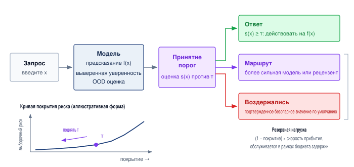
Конечновыборочное покрытие с конформным предсказанием
Калибровка описывает, совпадают ли предсказанные вероятности с эмпирическими частотами, тогда как селективное предсказание выбирает, на какие запросы система будет отвечать. Конформное предсказание предлагает другой контракт: оно оборачивает обученный предиктор скором несоответствия
На
Целевой уровень ошибочного покрытия равен
Здесь тестовая пара
Системная обязанность — сохранять условия, лежащие в основе гарантии. Изменение распределения между калибровкой и обслуживанием может обесценить аргумент обмениваемости; возраст калибровки сам по себе такого изменения не устанавливает. Даже если наблюдаемое покрытие остаётся достаточным, исходную гарантию нужно перепроверять по её допущениям. Повторная настройка модели, скора или порога на одних и тех же калибровочных исходах делает отложенные доказательства адаптивными, а не независимыми. Поэтому продакшен-системы версионируют предиктор, скор, снапшот калибровки и целевой
Размер множества или ширина интервала дают операционный сигнал нагрузки. Более крупные результаты передают менее определённые предсказания и могут триггерить отказ, более сильную модель или проверку человеком, так что их хвостовая распределение определяет ёмкость резерва так же, как кривая риск–покрытие определяет отклонённый трафик. Целевое покрытие, следовательно, не бесплатно: его увеличение обычно расширяет множества, повышает потребность в ревью или уменьшает долю запросов, на которых система может действовать автоматически.
Описанные выше режимы отказа возникают без злоумышленника, но граница с умышленным манипулированием проницаема. Мониторы распределения сами могут быть обойдены входами, специально созданными, чтобы оставаться под их порогами, превращая защитный инструмент в слепое пятно. Как только злоумышленник перестаёт полагаться на естественную изменчивость и начинает оптимизировать против границ решений модели, чтобы форсировать конкретные ошибки, модель угроз перемещается от экологической устойчивости к атакам на уровне входа.
Контрольная точка 14.2: Обнаружение дрейфа и решение о переобучении
Экологические сдвиги делятся на различные типы, и фреймворк дрейфа в этой главе намеренно отделяет сработавшую метрику от команды на переобучение.
Различение типа сдвига
Рассуждение о порогах и стоимости
Решение по каждому запросу
14.5 Состязательные атаки
Для классификатора, размечающего изображения поражений кожи, злоумышленник, изменяющий изображение доброкачественного поражения, может индуцировать злокачественное предсказание, сохраняя его видимое клиническое содержание. Успех такой манипуляции зависит от классификатора, допустимых модификаций и условий оценки. Высокоразмерные границы решений, выученные глубокими нейронными сетями, обладают контринтуитивными слепыми пятнами, и состязательные атаки выявляют их, проверяя, что злоумышленник может форсировать при контроле градиентов, запросов, физических сенсоров или обучающих данных.
Определение 14.3: Состязательная атака
Состязательная атака — это умышленное манипулирование входом, взаимодействием или средой модели, нацеленное на нарушение заданного поведенческого критерия. Манипуляция может быть ограничена нормой и визуально незаметна, но может быть и семантической, физической, запросовой или демонстративной.
- Значимость: Состязательная оценка спрашивает, может ли злоумышленник выбрать входы или преобразования, выводящие модель за пределы её предполагаемого поведенческого коридора. Высокоразмерные ограниченные нормой возмущения изображений — один важный случай, но патчи, повороты, распечатанные объекты, вредоносный текст и повторяющиеся black-box запросы выявляют иные границы системы.
- Отличие: В отличие от случайного искажения, сэмплированного независимо от цели, состязательная манипуляция выбирается так, чтобы вызвать отказ. Она не обязана использовать градиенты: злоумышленники могут применять суррогатные модели, запросы только по решениям, поиск, семантические правки или контроль над физической средой сенсоров.
- Типичная ловушка: Частое заблуждение состоит в том, что состязательная уязвимость — «баг», который можно закрыть патчем. В действительности это структурная уязвимость многих стандартных нейронных сетей, обученных минимизацией эмпирического риска; надёжная защита обычно требует фундаментальных изменений целевой функции (например, состязательного обучения).
Когда злоумышленник может непосредственно инспектировать градиенты модели, изменение, которое не может увидеть ни один человек, достаточно, чтобы обмануть классификатор изображений. Возмущение, следующее знаку градиента потерь (
Визуально малое изменение не обязано давать малое изменение скора классификатора.7 Состязательные возмущения эксплуатируют то, как изменения входа накапливаются в функции решений модели. Даже линейная функция может быть чувствительна ко многим малым согласованным изменениям по разным измерениям входа, поэтому одна нелинейность не объясняет уязвимость. Для линейного скора изменение каждой координаты входа на полный покоординатный бюджет в направлении знака её веса сдвигает скор на этот бюджет, умноженный на сумму абсолютных весов. При весах типичного размера этот итог растёт пропорционально числу измерений входа, хотя ни одна отдельная координата не смещается заметно. Существенное ограничение — способность допустимого возмущения переместить вход через выученную границу решений, а то, как злоумышленник находит это направление, зависит от доступа, который предоставляет развёрнутая система.
14.5.1 Атаки по доступу злоумышленника
Злоумышленник, который может читать веса и градиенты модели, способен перевернуть предсказание за один обратный проход, тогда как злоумышленник, сталкивающийся с API с ограничением частоты, должен потратить тысячи запросов или обучить локальную суррогатную модель, чтобы найти вход, пересекающий границу. Полезная ось, следовательно, — не само имя атаки, а доступ злоумышленника. Каждый механизм вскрывает разную стоимость, которую защита должна поднять: доступ к градиентам, время оптимизации, построение суррогатной модели или физический контроль над средой сенсоров.
Самый прямой случай — white-box доступ к градиентам. Нейронные сети вычисляют градиенты, чтобы учиться, как изменения параметров снижают потери; злоумышленник с доступом к градиентам может применить ту же логику к входу. В примере с пандой GoogLeNet из Рисунок 7 градиент по входному изображению даёт локальную оценку первого порядка того, как изменения пикселей влияют на потери. Метод быстрого градиентного знака (FGSM) превращает эту идею в одношаговую атаку, выбирая знак возмущения каждого признака так, чтобы максимизировать прирост первого порядка в пределах покоординатного бюджета.8
FGSM вычисляет состязательный пример за один шаг:
В этой формулировке
Геометрически движение вдоль вектора знака
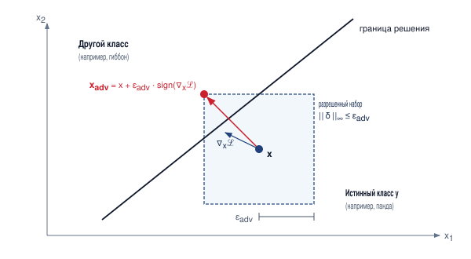
FGSM дёшев, потому что делает один шаг. Атака проекционным градиентным спуском (PGD) (Madry и др. 2018 г.) тратит больше вычислений ради более сильной атаки: она многократно применяет градиентные обновления и на каждом шаге проецирует результат обратно в допустимый нормой шар вокруг исходного входа. Эта итеративная доработка делает PGD стандартным white-box бенчмарком устойчивости. Атака на основе карты важности по Якобиану (JSMA) (N. Papernot и др. 2016 г.) использует якобиан, чтобы определить наиболее влиятельные признаки входа и возмутить меньшее множество измерений в сторону целевого класса. Эти методы наиболее эффективны в white-box условиях,9 где злоумышленник знает архитектуру модели и градиенты.
Когда атакующего заботит не столько скорость, сколько скрытность, атака превращается в задачу оптимизации. Атака Карлини и Вагнера (C&W)10 (Carlini и Wagner 2017 г.) ищет малое возмущение, вызывающее ошибочную классификацию, относительно выбранной метрики расстояния. Минимизация этого расстояния поощряет схожесть, но не удостоверяет перцептивную эквивалентность для человека и не гарантирует глобально минимального возмущения. Вместо того чтобы просто следовать знаку градиента, C&W оптимизирует специальную целевую функцию, в которой размер возмущения балансируется против уверенности в неверном ответе.
Атака может искать возмущение при разных нормах, например
Атакующие в чёрном ящике теряют прямой доступ к градиентам, но сохраняют два маршрута. Трансферные атаки опираются на переносимость — свойство состязательного примера обманывать модели, отличные от той, на которой он был создан. Атакующий создаёт примеры офлайн на суррогатной модели и отправляет их целевой модели, как правило через её публичный API, не видя её весов или градиентов. Атаки на основе запросов прощупывают саму целевую модель. Атака на основе решений, или пограничная атака, требует только возвращённой метки. Она стартует с входа, который модель уже классифицирует неверно, и движется вдоль границы решений к исходному входу, делая запросы на каждом шаге, чтобы оставаться на неверной стороне. Её стоимость — это число запросов, поэтому бюджеты запросов и лимиты частоты относятся к защите.
↩︎ Спектр знаний атакующего — от градиентного доступа в белом ящике до атакующих в чёрном ящике, работающих через суррогат или публичный интерфейс, — описан в Классификация векторов угроз.
Перенос работает потому, что модели, обученные на одной задаче на схожих данных, склонны выучивать схожие границы решений, поэтому возмущение, переносящее вход через границу одной модели, часто переносит его и через границу другой. Успех переноса зависит от сходства моделей, пересечения обучающих данных и регуляризации, а атакующий может улучшить его с помощью разнообразия входов, например случайного изменения размера или обрезки, и с помощью импульса при оптимизации. Закрыть этот маршрут защитнику стоит затрат на обучение. Ансамблевое состязательное обучение ведёт обучение против возмущений, сгенерированных на нескольких моделях, чтобы повысить устойчивость к переносу, но дополнительная генерация атак и разнообразие моделей делают это осознанным решением о бюджете обучения, а не бесплатной мерой (Tramèr и др. 2017 г.).
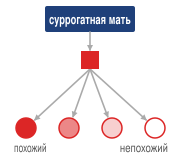
Состязательный пример, созданный на суррогатной модели, чаще обманывает похожие модели, чем непохожие.
14.5.2 Атаки в физическом мире
Цифровые атаки в белом и чёрном ящиках изменяют тензоры пикселей напрямую в памяти, тогда как атакующий «в поле» не может редактировать буфер камеры и вынужден размещать возмущение на физических объектах — дорожных знаках, одежде или 3D-печатных поверхностях. Состязательные патчи — это напечатанные узоры, размещаемые в сцене так, чтобы камеры и детекторы неверно их считывали даже после прохождения через сенсоры, расстояние, освещение, угол обзора и обычные вариации развёртывания. Изменение не обязано быть визуально неразличимым, поскольку граффити-подобные пометки и стикер-патчи, проходящие за обычный вандализм, всё же могут вызывать ошибочную классификацию через конвейер камеры (Eykholt и др. 2017 г.). Вопрос устойчивости становится, таким образом, операционным, а не чисто математическим: защита, работающая на сохранённом изображении, может не сработать, как только атака пройдёт через объектив камеры, сжатие, смаз от движения и меняющуюся освещённость. Эти угрозы наиболее значимы для ИИ-систем, развёрнутых в физическом пространстве, — беспилотных автомобилей, дронов и систем наблюдения, где ошибка модели становится проблемой безопасности, защищённости и подотчётности в реальном мире.
Пример 14.1: Атака на знак «Стоп»
Сценарий: Атака стикерами на дорожных знаках размещает чёрно-белые стикеры на знаке «Стоп» так, чтобы модель зрения считывала его как знак ограничения скорости (Рисунок 9) (Eykholt и др. 2018 г.). Вопрос устойчивости — что говорят две приведённые доли успеха о том, как должно проводиться оценивание.
Диагноз: Атака удалась на всех протестированных лабораторных изображениях, но на 84.8 процентах кадров полевого теста в движущемся автомобиле. Каждое число — доказательство только для собственных условий съёмки, и разрыв между ними не изолирует ни один отдельный фактор — расстояние, угол обзора, освещение или движение.
Системный урок: Физическую атаку нужно оценивать через полный сенсорный контур, а не на сохранённых бенчмарк-изображениях. Оценивание должно оптимизировать атаку, усреднённую по случайным выборкам из ожидаемого диапазона трансформаций, — метод, называемый «ожидание по трансформациям» (expectation over transformation), — а затем проверять её на реальных съёмках. Любая заявленная мера смягчения, например проверка согласованности между кадрами (пространственно-временная валидация) или между сенсорами (сенсорное слияние), должна проверяться против атак на полный стек восприятия.
↩︎ Атака стикерами на дорожных знаках описана как угроза безопасности в Векторы атак, специфичные для модели.
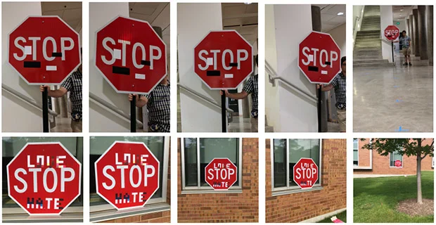
Доступ атакующего определяет то испытание, которое должна выдержать защита. Градиентный доступ, оптимизация, перенос через суррогат и манипуляция физическими сенсорами требуют каждого собственного способа оценивания (Таблица 6), поэтому результат при одном механизме атаки не превращается в заявление обо всех.
| Категория | Метод | Механизм |
|---|---|---|
| Градиент | FGSM | Возмущает входы вдоль градиента функции потерь |
| PGD | Итеративная многошаговая доработка FGSM | |
| JSMA | Нацеливается на самые влиятельные признаки | |
| Оптимизация | C&W | Минимизирует размер возмущения при условии ошибочной классификации |
| DeepFool | Оценивает малое пересекающее границу возмущение локальной линеаризацией | |
| EAD | Эластично-сетевая регуляризация для разреженных возмущений | |
| Перенос | Переносимость | Состязательные примеры переносятся между моделями (чёрный ящик) |
| Физические | Патчи | Напечатанные патчи обманывают детекторы в реальном мире |
| 3D-объекты | Слепленные объекты обманывают сенсоры при развёртывании |
Атаки в медицинской визуализации могут привести к ошибочному диагнозу (Tsai и др. 2023 г.), а модели выявления мошенничества и торговли сталкиваются с аналогичными рисками манипуляции. Общая уязвимость — опора на признаки, которые остаются предсказательными на чистых данных, но отказывают при специально созданных возмущениях (Goodfellow и др. 2015 г.; Madry и др. 2018 г.). Защита смещает распределение затрат: состязательное обучение добавляет работу при обучении (Bai и др. 2021 г.), а обнаружение во время исполнения, например feature squeezing, добавляет вычисления при инференсе (Xu и др. 2018 г.). Выбор между этими точками расходов мотивирует защиты из Глава 14.6.
14.6 Состязательные защиты
Классификатор, назвавший панду гиббоном в Рисунок 7, не был сломан случайным шумом; бюджета возмущения в 0.007 на пиксель, потраченного вдоль знака градиента, оказалось достаточно. Защита развёрнутой модели восприятия от такого атакующего требует модели угроз, называющей доступ атакующего, и бюджета на тестирование и смягчение. Полученное заявление об устойчивости должно указывать, что платит система в чистой точности, вычислениях при обучении, задержке инференса или операционном покрытии.
14.6.1 Процесс состязательной защиты
Команда, применяющая состязательное обучение без предварительного задания нормы и бюджета возмущения, может многократно увеличить вычисления на обучение и потерять чистую точность, не покрыв при этом реальную угрозу развёртывания. Предотвратить такую нецелевую трату позволяет процесс состязательной защиты с четырьмя упорядоченными слоями:
- Определите модель угроз: Задайте бюджет возмущения, знания атакующего и то, происходит ли атака во время инференса или во время обучения.
- Выберите, где потратить бюджет защиты: Решите, направить ли его в обучение, сертификацию, обнаружение на входе или ограждения на этапе обслуживания.
- Измерьте компромисс: Оцените обе стороны защиты, потому что улучшение поведения в худшем случае может снизить чистую точность, поднять задержку инференса или многократно удорожить обучение.
- Держите оценивание состязательным: Проверяйте защиту против атак сильнее тех, что использовались при её проектировании.
Порядок важен, потому что решения о тратах и оценивании, принятые до спецификации модели угроз, не могут показать защиту от атакующего, с которым реально сталкивается развёртывание. Для угроз возмущений, направленных на модель, наиболее прямая защита на этапе обучения — состязательное обучение, которое включает состязательные примеры в сам процесс обучения. Механизм переиспользует атаки из предыдущего раздела как генератор данных. Каждый шаг обучения дополняет батч возмущёнными копиями его собственных входов, так что модель обучается на точках высокой потери, которые выбрал бы атакующий. В простейшей форме FGSM генерирует возмущения, и каждый батч смешивает чистые и состязательные примеры (Список 1).
function adversarial_training_step(model, clean_batch, labels, epsilon):
logits = model(clean_batch)
clean_loss = loss(logits, labels)
input_gradient = gradient(clean_loss, clean_batch)
perturbation = epsilon * sign(input_gradient)
adversarial_batch = stop_gradient(
clip(clean_batch + perturbation, valid_input_range))
mixed_batch = concatenate(clean_batch, adversarial_batch)
mixed_labels = concatenate(labels, labels)
return loss(model(mixed_batch), mixed_labels)В Список 1 шаг со знаком ограничивает изменение каждой координаты бюджетом возмущения, а отсечение (clipping) удерживает возмущённый вход внутри допустимого диапазона входов (например, epsilon) ограничивает допустимое изменение входа, а алгоритм атаки определяет, насколько эффективно он ищет в этом множестве; повторное использование вычислений может снизить накладные расходы на обучение (Shafahi и др. 2019 г.).
Генерация состязательных примеров увеличивает время обучения, поскольку каждый шаг обучения требует дополнительных прямых и обратных проходов через модель (Madry и др. 2018 г.; Bai и др. 2021 г.). Накладные расходы по памяти зависят от того, хранит ли реализация чистые и состязательные примеры вместе, пересчитывает возмущения или повторно использует градиентную информацию. Итеративные атаки вроде PGD добавляют несколько шагов оптимизации, поэтому реализация должна заложить бюджет на эту градиентную работу; оптимизированные варианты снижают накладные расходы за счёт переиспользования вычислений, а не за счёт трактовки каждого шага атаки как отдельного полного прохода обучения (Shafahi и др. 2019 г.). Рецепт устойчивости, увеличивающий ёмкость модели, также добавляет затраты памяти и обучения. Бюджет возмущения и рецепт обучения требуют согласования чистой и состязательной валидации, и врезка ниже показывает, почему это согласование решает, каков в действительности штраф за устойчивость.
Системный взгляд 14.1: Корректная оценка штрафа за устойчивость
Пусть стандартный ResNet-50 показывает 76 percent точности Top-1 на чистом ImageNet, а состязательно обученная модель — около 50 percent под заданной атакой
Штраф по чистой точности должен сравнивать стандартную и устойчивую модели на одном и том же чистом тестовом наборе. Преимущество в устойчивости должно сравнивать эти модели при одной и той же атаке, бюджете возмущения и силе атаки. Четыре ячейки — это стандартная модель на чистых данных, стандартная модель под атакой, устойчивая модель на чистых данных и устойчивая модель под атакой. Штраф — это разность первой и третьей ячеек, преимущество — разность четвёртой и второй, а приведённая пара даёт только первую и четвёртую. Отчёт по всем четырём ячейкам не позволяет кажущемуся компромиссу смешать эффект модели с эффектом условий оценивания.
Системная мысль: Устойчивость может снижать чистую точность и увеличивать вычисления, но каждая стоимость требует сопоставимого (like-for-like) базового уровня. Шлюз развёртывания должен отдельно сообщать чистую точность, эмпирическую точность под атакой, спецификацию атаки и стоимость оценивания.
Штраф устойчивости по вычислениям (принцип «Штраф устойчивости по вычислениям») количественно определяет эту стоимость: состязательная устойчивость в стиле PGD может требовать в несколько раз больше вычислений на эпоху, чем стандартная оптимизация, потому что каждый батч выполняет внутренние шаги атаки. В терминах Fleet Law (Уравнение (3)) этот множитель ложится на покомпонентный член вычислений
Инженерный расчёт 14.2: Цена защиты
Задача: команда обучает устойчивый классификатор для автономного автомобиля. Вместо одного шага FGSM из листинга Список 1 здесь применяется адверсариальное обучение с семишаговой PGD-атакой (PGD-7), которая для каждого обучающего батча ищет возмущение с высокой функцией потерь внутри заданного нормового шара. Следуя стандартному рецепту PGD-адверсариального обучения (Madry и др. 2018 г.), модель обучается только на адверсариальном батче, а не на удвоенном батче «чистые плюс адверсариальные» примеры из листинга. Насколько эта дополнительная работа по генерации атак замедляет обучение?
Математика: В этом примере генерация адверсариального входа требует
- Прямые/обратные проходы: 1 (стандарт) + 7 (генерация атаки) = 8 всего проходов.
- Замедление обучения: 8× в предположении равной стоимости проходов.
- Доказательство пользы: дополнительная работа должна быть оправдана измеренной устойчивой точностью (robust accuracy) против заданной атаки. Обобщение на другие атаки требует отдельной оценки. Оценка любой потери чистой точности требует сравнения «при прочих равных» из врезки 14.1, а не вычитания устойчивой точности из чистой точности другой модели.
Системный вывод: в этой модели работы PGD-7 команда закладывает 8× от базовых вычислений до того, как измерит выигрыш в устойчивости или фактическую потерю времени. В парке моделей машинного обучения устойчивость — не переключатель, который можно включить; это бюджет, который команда расходует, и этот бюджет должен быть оправдан тяжестью последствий отказа защищаемого компонента.
Для компонентов с меньшим риском внешние ограждения — фильтрация входов и верификация выходов — могут стоить дешевле, чем встраивание собственной устойчивости в веса, при условии, что адаптивная оценка (Глава 14.6.1.3) подтверждает приемлемый остаточный риск против атакующего, знающего устройство ограждения. Успешное отражение конечного набора атак не доказывает отсутствие обхода. Для критичных к безопасности путей чаще оправдан бюджет на обучение и сертификацию.
Сертифицированные защиты
Адверсариальное обучение даёт эмпирическую устойчивость, которую нужно проверять против модели угроз развёртывания. Оно может обобщаться за пределы примеров, сгенерированных при обучении, но одна лишь оценка атак не доказывает инвариантность на всём допустимом множестве возмущений. Сертифицированная устойчивость предлагает математическую гарантию: для данного входа
Вычислить или ограничить точную константу Липшица напрямую через глубокую сеть трудно: послойные нормовые границы перемножаются по глубине и быстро становятся слишком свободными, чтобы сертифицировать полезные радиусы. Широко применяемый приём, позволяющий избежать послойного распространения границ на многомерных входах вроде ImageNet, — рандомизированное сглаживание. Вместо классификации
Cohen и др. (2019 г.) доказал точную многоклассовую границу для сертифицированного радиуса
Многоклассовый случай редко оценивает вероятность конкурента отдельно. Поскольку вероятности классов в сумме дают единицу, ни один конкурирующий класс не может превысить
Сертификация несёт и компромиссы по точности и вычислениям. На ImageNet та же работа сообщает о нетривиальной сертифицированной точности рандомизированного сглаживания, включая сертификацию на радиусе 0.5, но сертификация требует множества выборок шума на каждый инференс, чтобы оценить вероятности классов с достаточной уверенностью. Рост задержки инференса превращает бюджет выборок в ограничение развёртывания. Два дизайна выносят сертификацию за пределы жёсткого бюджета обслуживания. Асинхронный аудит сертифицирует офлайн выборочную долю обслуженных запросов, так что парк узнаёт, как часто его ответы были сертифицируемыми, не задерживая ни один из них. Выборочный предохранитель сертифицирует только запросы, направленные на критичное к безопасности действие, например решение о торможении, а остальной трафик идёт по несертифицированному пути.
Сертифицированные защиты покрывают лишь часть адверсариального рабочего процесса. Производственным системам по-прежнему нужны пути обнаружения подозрительных входов, стратегии смягчения, меняющие обучение или обслуживание, и процедуры оценки, проверяющие, какие модели угроз остаются покрытыми.
Техники обнаружения
Обнаружение адверсариальных примеров до того, как они достигнут модели, образует первую линию обороны, только если сигнал доходит до решения по обслуживанию: отклонить, преобразовать, перенаправить или проверить. Сигнал уровня популяции спрашивает, напоминает ли окно текущих входов референсную популяцию. Двухвыборочные тесты из Глава 14.4.2.3 служат здесь без изменений. Тест Колмогорова—Смирнова или тест Андерсона—Дарлинга, вариант, сильнее взвешивающий различия в хвостах распределения, может пометить окно трафика, чьи входы перестали напоминать референс. Такое оповещение не помечает отдельный запрос как адверсариальный; отклонение по одному запросу требует дополнительного решающего правила. Эти тесты наследуют и слепое пятно мониторов дрейфа: адверсариальное возмущение может сохранять маргинальное распределение каждого признака, искажая совместную структуру, которую выявили бы сравнения совместных распределений или эмбеддинг-пространств.
Атака, сохраняющая маргинальные распределения, может обойти этот сигнал. Дополняющий позапросный сигнал спрашивает, переживает ли предсказание упрощающее преобразование входа. Сжатие признаков (feature squeezing)12 (Xu и др. 2018 г.) снижает сложность входного пространства путём уменьшения битовой глубины цвета или пространственного сглаживания, затем сравнивает предсказание модели до и после преобразования. Большое изменение предсказания помечает чувствительность к преобразованию. Само по себе это не устанавливает злонамеренность и не указывает, какая деталь изображения вызвала изменение; легитимные входы тоже могут срабатывать на детектор.
Ещё один сигнал спрашивает, уверена ли модель в собственном ответе. Оценка неопределённости модели13 может перенаправить вход на отклонение, человеческую проверку или более устойчивую модель. Байесовские нейронные сети оценивают неопределённость, помещая распределение вероятностей на каждый вес и усредняя предсказания по выборкам весов, так что расхождение этих выборок сигнализирует о неопределённости. Ансамблевые методы сравнивают предсказания независимо обученных моделей и используют расхождение как предупреждающий сигнал (Lakshminarayanan и др. 2017 г.). Их ценность для обнаружения зависит от того, отличает ли неопределённость вредоносные входы от легитимных при выбранной атаке. Повторные предсказания добавляют работу инференса, поэтому развёртывания должны оценивать и пропущенные атаки, и стоимость обслуживания, а не полагать, что более дорогой оценщик обнаруживает больше.
Dropout — регуляризатор этапа обучения, случайным образом отключающий нейроны (Hinton и др. 2012 г.), — даёт более дешёвое приближение такой выборки весов. Его можно перепрофилировать для оценки неопределённости через Monte Carlo dropout14 на этапе инференса, где несколько прямых проходов с разными dropout-масками аппроксимируют распределение неопределённости. Monte Carlo dropout сам является приближённым байесовским методом. Его оценки неопределённости нужно валидировать на популяции развёртывания, а не ранжировать по исходному назначению dropout.
За пределами обнаружения, адверсариального обучения и сертификации остальные стратегии смягчения лишь перемещают точку расходов, не устраняя саму стоимость. Оборонительная дистилляция (Nicolas Papernot и др. 2016 г.) обучает модель-ученика на мягких метках учителя. Её видимая адверсариальная защита происходила из маскировки градиентов, при которой защита оставляет адверсариальные входы на месте, но делает градиенты модели слишком плоскими или неинформативными, чтобы градиентная атака могла их использовать. Атаки, обошедшие маскированные градиенты, победили её (Carlini и Wagner 2017 г.), поэтому провал оптимизатора атаки — не свидетельство отсутствия близких адверсариальных входов. Предобработка входов тратит бюджет защиты на этапе обслуживания: шумоподавление изображений, JPEG-сжатие, случайное масштабирование, дополнение (padding) и случайные трансформации пытаются стереть возмущения до того, как модель их увидит. Ансамбли тратят его через избыточность, объединяя модели с разными архитектурами, обучающими данными или путями предобработки, так что возмущение, обманувшее одного участника, с меньшей вероятностью обманет их всех.
Оценка и тестирование
Оценка замыкает цикл бюджета: система должна измерять, какие атаки защита реально покрывает и какой производительностью жертвует в контролируемых условиях атаки. Метрики устойчивости количественно определяют живучесть через точность на адверсариальных примерах, требуемое для обмана модели искажение и производительность при разных бюджетах атаки. Стандартизированные бенчмарки вроде MNIST-C (Mu и Gilmer 2019 г.), CIFAR-10-C и ImageNet-C (Hendrycks и Dietterich 2019 г.) измеряют распространённые искажения, а не злонамеренное поведение наихудшего случая, поэтому их результаты занимают другую ячейку Таблица 1.
Эмпирическая оценка атак должна быть адаптивной к защите. Оценщик должен знать предобработку, детектор, случайность, ансамбль и правило отклонения. Он должен оптимизировать через дифференцируемые компоненты, а для рандомизированных — использовать expectation over transformation, здесь усредняя градиент атаки по случайным выборкам защиты, а не по физическим трансформациям. Он должен проверять transfer- и query-based-атаки, когда градиенты недоступны, и включать полный конвейер, а не только сохранённую модель. Многократные случайные перезапуски и бюджеты атак могут усилить доказательства внутри этой модели угроз, но пройденный тест PGD доказывает ни то, что PGD нашла внутренний максимум, ни то, что покрыты семантические, физические атаки или атаки с другими нормами. Гарантию устанавливает только сертификат — и только для заявленных входа, нормы, радиуса и предположений.
RobustBench воплощает эту дисциплину в масштабе с помощью одного стандартизированного ансамбля атак без параметров — AutoAttack, применяемого к каждой опубликованной защите в рамках одной фиксированной модели угроз, которая для CIFAR-10 задаёт возмущение не более 8/255 на пиксель в норме
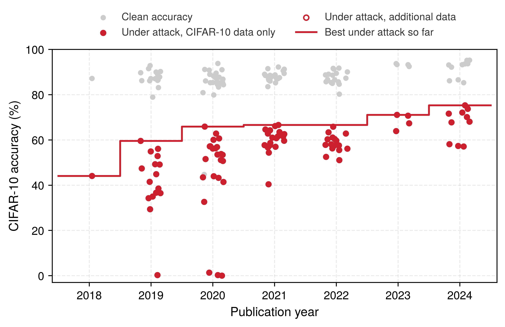
Адверсариальное обучение, сертифицированные защиты и детектирование входов адресуют атаки на входы модели в момент инференса в рамках ограниченных моделей угроз. Они не устанавливают, что модель была обучена на доверенных данных. Если злоумышленник скомпрометировал конвейер данных задолго до компиляции модели, поведенческие тесты на этапе инференса могут выявить бэкдор — триггерный паттерн, подсаженный через обучающие данные и заставляющий модель выдавать выбранную злоумышленником метку, — но сами по себе не могут установить целостность обучающего конвейера. Поэтому атаки отравлением требуют собственного класса защит.
Контрольная точка 14.3: Выбор и бюджетирование адверсариальной защиты
Адверсариальная защита — это бюджетированный ответ на конкретную модель угроз. Более сильные гарантии обычно меняют точность на чистых данных, вычисления, задержку или покрытие, но направление и величина этих изменений зависят от рабочей нагрузки, модели, защиты и границы оценивания.
Сопоставление защиты с моделью угроз
Рассуждение о бюджете
14.7 Защиты от отравления данных
Рекомендательная модель может сохранять общую точность, продвигая выбранный злоумышленником товар небольшой группе пользователей. Защита от такого сбоя требует проверки целевого поведения, а также обеспечения целостности обучающей цепочки поставок. Разрешения на источники задают границу безопасности, а оценка устойчивости измеряет, что происходит, когда отравленные записи или обновления всё же пересекают её.
Отравление изменяет данные, из которых учится модель, а не возмущает фиксированную модель в момент инференса, и его угроза простирается от ранних атак на метод опорных векторов (Biggio и др. 2012 г.) до веб-масштабных и генеративных конвейеров данных (Shan и др. 2023 г.). Чат-бот Microsoft Tay, который, по сообщению его оператора, был подорван скоординированной атакой в течение суток после запуска (Lee 2016 г.), показывает, почему любая система, обучающаяся на живом взаимодействии, делает каждого пользователя потенциальным источником обучающих данных. Инженерный вопрос, следовательно, состоит в том, какие вклады могут попадать в обучение и как можно аудировать их влияние.
↩︎ Отравление данных — порча обучающих данных или обновлений, из-за которой обученная модель впоследствии ведёт себя некорректно, — и его последовательность допуска, обучения и эксплуатации описаны в Отравление данных.
Атака с «грязными» метками портит метку, поэтому её может поймать аудит меток. Её противоположность, отравление с чистыми метками, сохраняет все метки корректными и портит признаки вместо них — вот почему несколько защит ниже должны смотреть дальше меток, на признаки и представления. Любая из этих форм может подсадить бэкдор через отравленные записи, оставляя обученной модели вести себя нормально, пока вход не содержит триггер. Обучающие корпуса генеративных моделей подвержены той же угрозе в форме отравления концепций, когда несколько сотен возмущённых изображений могут изменить то, что модель «текст-в-изображение» рисует по запросу. Отравление данных рассматривает эти механизмы, тот случай и пути, которыми отравленные записи попадают в конвейер.
Отравленные записи могут походить на легитимные данные, поэтому одна лишь чистая агрегированная валидационная точность не может установить, что обучающему корпусу можно доверять: целенаправленная атака спроектирована так, чтобы прятаться внутри в остальном нормальной производительности. Атаки могут исходить от внутренних субъектов с привилегированным доступом к конвейеру или от внешних злоумышленников, эксплуатирующих краудсорсинговый сбор или открытые конвейеры данных без проверок целостности и отслеживания происхождения. Поэтому защита строится как четыре упорядоченных слоя вдоль пути данных:
- Контроль входа устанавливает происхождение и ограничения доступа, определяя, какие источники могут вносить или изменять данные.
- Детектирование аномалий и санитизация инспектируют записи-кандидаты перед обучением и отфильтровывают подозрительные submissions.
- Устойчивые функции обучения уменьшают вес, который получают большие остатки для отравленных образцов, избежавших фильтрации при приёме, хотя сами по себе не ограничивают обновления параметров.
- Пост-обучающие проверки испытывают поведение обученной модели на целях отравления, которые скрывает агрегированная точность, до выпуска модели.
Каждый слой покрывает отдельную точку на пути данных и имеет собственное слепое пятно, поэтому ни один отдельный детектор не может заменить сквозной контроль. Обучение представлений лежит под всеми четырьмя слоями как фундамент, а не пятые ворота: оно снижает зависимость модели от хрупких признаков, которые могут эксплуатировать отравленные экземпляры, но не может доказать, что обучающий корпус не скомпрометирован.
Для рекомендательной системы перехватывающий слой на Рисунок 11 проверяет внесённые рейтинги до того, как они достигнут обучения. Его решения должны сохранять происхождение, чтобы последующие сбои модели можно было проследить до принятых записей.
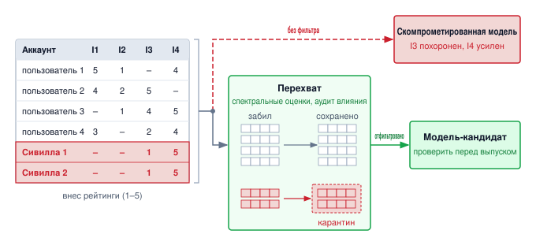
14.7.1 Контроль входа и аномалий
Если непроверенный источник данных или скомпрометированная учётная запись участника может писать напрямую в обучающую таблицу, статистические фильтры выбросов увидят лишь те атаки, которым не удалось замаскироваться. Поэтому защита от отравления начинается на границе данных, до запуска любого статистического детектора. Конвейер должен знать, каким источникам разрешено поставлять обучающие данные, как проверяется их подлинность и какие роли могут изменять принятые записи. Строгое управление реализует принцип наименьших привилегий,15 протоколирует события доступа к данным и их изменения и присваивает каждой принятой батч-порции идентичность источника. Эти меры не доказывают, что каждая запись чиста, но ограничивают поверхность атаки и дают находкам аномалий прослеживаемое происхождение.
Опорный пример 14.1: Архетип B (DLRM в масштабе): внедрение фальшивых профилей
Архетип B (DLRM в масштабе) особенно уязвим к внедрению фальшивых профилей. Рекомендательные системы часто используют онлайн-обучение, чтобы адаптироваться к трендам пользователей в реальном времени. Поэтому злоумышленник может создать сеть «сибил»-аккаунтов — фальшивых идентичностей, контролируемых одним атакующим, — которые взаимодействуют с конкретными товарами, искусственно повышая их популярность или связывая их с высокоценными демографическими группами. Такое отравление обходит традиционные межсетевые экраны, потому что вредоносные взаимодействия выглядят как легитимное поведение пользователей, что мотивирует проверки идентичности участников, паттернов взаимодействия и выученных представлений. Защиты на спектральных сигнатурах (развиваемые в Глава 14.7.1.1) ищут в паттернах активаций подозрительное разделение, но их эффективность зависит от того, разделяются ли отравленные и чистые вклады в этом представлении.
После границы источников детектирование аномалий спрашивает, принадлежит ли кандидат в обучающие примеры тому распределению, из которого конвейер намеревался учиться. Самые дешёвые тесты сравнивают каждую запись с основной массой распределения: фильтрация по Z-оценке, метод Тьюки и расстояние Махаланобиса помечают примеры, значения признаков которых лежат далеко от нормальных диапазонов. Эти тесты полезны, потому что достаточно быстры для запуска на приёме, но они ловят только яды, выглядящие как статистические выбросы в пространстве сырых признаков. Для многомерных или мультимодальных данных расстояния в сырых признаках — слабый сигнал: манипулированное изображение или подпись, прошедшая проверки сырых признаков, может отделиться от чистых примеров в пространстве эмбеддингов предобученной визуальной или языковой модели. Это разделение зависит от энкодера и атаки, поэтому его нужно измерять, а не выводить из самого факта использования выученного представления. Применение расстояния Махаланобиса или кластеризации к этим представлениям проверяет гипотезу, отличную от скрининга сырых признаков. Конвейер должен проверить, соответствуют ли полученные выбросы вредоносным вкладам или легитимной вариативности, которую нужно сохранить.
Более скоординированные атаки требуют проверок с учётом структуры. Методы кластеризации — K-means, DBSCAN и иерархическая кластеризация — ищут аномальные группы или изолированные точки, а не единичные экстремальные значения. Ворота приёма на автоэнкодере в Рисунок 12 добавляют выученное представление в конвейер скрининга. Модель сжимает входы через бутылочное горлышко — слой
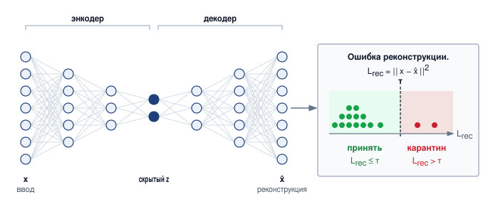
Санитизация и предобработка
Санитизация превращает сигналы об аномалиях в изменения обучающего набора до того, как отравленные данные достигнут оптимизации. Подозрительную запись можно отклонить, поместить в карантин на проверку, снизить её вес при обучении или оставить с явным флагом происхождения. Рутинная очистка по-прежнему важна: дедупликация, обработка пропущенных значений, проверка типов, ограничения диапазонов и кросс-проверка полей устраняют множество простых попыток отравления, попутно повышая обычное качество данных.
Отслеживание происхождения данных и lineage делает эти решения обратимыми. Для каждой записи нужен журнал её источника, преобразований, результатов валидации и перемещений по конвейеру. Когда модель позднее проявляет симптом отравления, lineage позволяет оператору проследить зависимости модели обратно до кандидатов — исходных батчей — и выяснить, какие вклады вызвали такое поведение. Lineage также позволяет оператору оценить, какие обученные модели потребляли подтверждённо скомпрометированные примеры, и решить, удалять ли затронутые записи, менять ли им метки или веса.
Когда подозрительные данные уже попали в корпус, санитизация переходит от проверок источника к проверкам представлений. Спектральные сигнатуры используют разделение между чистыми и отравленными образцами в выученном представлении (Tran и др. 2018 г.). В бэкдор-атаке отравленные записи несут целевую метку, поэтому сеть вынуждена выучить два различных внутренних пути для её присвоения: подлинные семантические признаки для чистых примеров и внедрённый триггерный признак для отравленных примеров, происходящих из других классов. Этот двойной механизм сдвигает вектор средних активаций отравленной субпопуляции от среднего чистых примеров целевого класса, что создаёт всплеск дисперсии вдоль направления, соединяющего средние двух субпопуляций. В изученных Траном и коллегами бэкдор-атаках проецирование центрированных представлений целевого класса на их верхний сингулярный вектор выделяло это направление смещения, а удаление образцов с высокими оценками вскрывало многие отравленные записи без предварительного знания триггера. Метод зависит от достаточного разделения средних относительно нормальной внутриклассовой вариации, поэтому эффективный бэкдор сам по себе не гарантирует пригодную спектральную сигнатуру. Следовательно, фильтрация требует специфичной для атаки оценки и проверки отброшенных чистых образцов.
Функции влияния (Koh и Liang 2017 г.) играют более узкую отладочную роль. Они аппроксимируют, как бесконечно малое увеличение веса обучающей точки
14.7.2 Цели устойчивого обучения
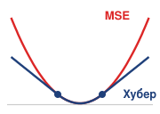
Функция Хубера ограничивает уцелевший выброс, растя линейно там, где MSE продолжает возводить в квадрат.
При стандартной цели на основе квадрата ошибки единственный отравленный образец, переживший фильтрацию на этапе загрузки с большой остаточной ошибкой, вносит квадратичный вклад в потери и тянет градиент гораздо сильнее типичной точки. Чтобы ограничить влияние уцелевших выбросов до оценки при выпуске, устойчивая оптимизация модифицирует саму цель обучения. Устойчивые функции потерь, такие как функция Хубера,16 функция Тьюки (Beaton и Tukey 1974 г.) и усечённое среднее, занижают вес или игнорируют вклад аномальных экземпляров во время обучения. Методы регуляризации (
Аугментация данных расширяет разнообразие обучения, применяя горизонтальные отражения, дополнение с обрезкой, повороты и цветовой джиттер (Рисунок 13). Варианты сохраняют метку, когда преобразование согласуется с классом (горизонтальное отражение не обязано сохранять метку цифры), и могут разрушать некоторые локализованные ядовитые паттерны. Другие преобразования сохраняют триггер атаки, так что аугментация не гарантирует разбавления. Случайная подвыборка или бэггинг меняет то, с какими отравленными записями сталкивается каждая модель; снижает ли объединение таких моделей эффект атаки, требует проверки против скоординированного отравления.
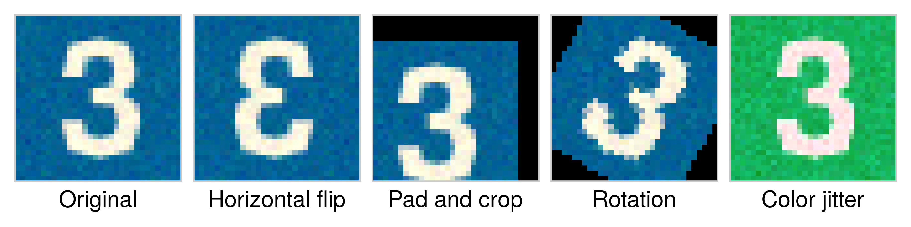
Распределённое и федеративное обучение добавляет к той же угрозе ось участников, а устойчивая агрегация — counterpart слоя цели обучения на уровне участников. Злонамеренному клиенту не обязательно вставлять видимую запись в центральный корпус; он может отправить обновление модели, выбранное так, чтобы сдвинуть агрегат, внедрить бэкдор или использовать сибил-идентичности для получения непропорционального веса. Архетип C (федеративный MobileNet) делает это конкретным: сервер агрегирует обновления от большой популяции клиентов класса смартфонов, чьи исходные данные он никогда не видит, поэтому проверки на уровне участников фильтруют обновления до агрегации. Krum (сохраняющий одно обновление, ближайшие соседи которого лежат к нему ближе всех), координатная медиана и усечённое среднее (Византийские отказы) допускают ограниченное византийское поведение только при своих заявленных предположениях (Blanchard и др. 2017 г.; Yin и др. 2018 г.); высокая размерность и не-i.i.d. обновления клиентов могут сделать честных участников похожими на аномальные. Эти правила меняют и коллективное взаимодействие, поскольку медиана, усечённое среднее или выбор Krum требуют индивидуальных обновлений, а не их суммы, что повышает трафик на работника по сравнению с кольцевым AllReduce.
↩︎ Стоимость трафика агрегации на основе gather относительно кольцевого AllReduce установлена в Целостность синхронизации градиентов.
14.7.3 Послепроизводственные поведенческие проверки
Допуск отравленной записи сам по себе не гарантирует, что обучение выучит поведение злоумышленника, поэтому последний слой проверяет обученную модель, а не её входы. Свидетельства, вскрывающие отравление, различаются по четырём классам целей, которые различает Отравление данных: атаки на доступность, целевые, бэкдор и отравление субпопуляций. Вопрос устойчивости в том, какие свидетельства вскрывают каждый класс и сколько это стоит (Oprea и др. 2022 г.). Успешные атаки на доступность могут снизить агрегированную точность на валидации, давая широкой оценке сигнал к расследованию. Целевые атаки, нацеленные на конкретные входы, и атаки на субпопуляции, нацеленные на целую когорту, могут оставить этот агрегат почти нетронутым, что делает особенно важной оценку на именованных целях и когортах. Бэкдоры также могут сохранять точность на чистых данных, реагируя на триггер, который оценщик никогда не видел, как делает пиксельный паттерн-триггер BadNets (Gu и др. 2017 г.). Возможные стратегии обнаружения включают поиск триггеров, канареечные входы (пробные входы с известными ожидаемыми выходами, не участвующие в обучении) и инспекцию пространства активаций, когда представления отравленных и чистых данных разделяются (Tran и др. 2018 г.).
Для федеративных и распределённых участников выпускной шлюз имеет ту же форму. Выносные поведенческие тесты на итоговой глобальной модели должны варьировать число и координацию злонамеренных участников, их гетерогенность данных, расписание участия и знание правила агрегации. Глобальная точность на чистых данных вновь недостаточна: шлюзу нужны успешность атаки на триггер или целевую субпопуляцию, полнота обнаружения аномалий на уровне участников и стоимость чистой полезности устойчивой агрегации. Следовательно, происхождение, лимиты участия, устойчивая агрегация и выносные канарейки должны работать вместе, а не считать одно правило расстояния доказательством защиты от отравления.
Рабочее правило — послойное: аутентифицировать и управлять источниками до загрузки, санитизировать подозрительные данные до обучения, ограничивать уцелевшие выбросы во время оптимизации, проверять обученную модель на цели отравления до выпуска и сохранять lineage, чтобы инцидент можно было проследить до скомпрометированного источника. Отравление данных остаётся активной областью исследований, но производственные системы должны относиться к обучающему корпусу как к цепочке поставок, а не как к пассивному набору данных.
Четыре слоя действуют на записи, цели и обученную модель. Представление, не опирающееся на хрупкие shortcuts, даёт отравленному shortcut меньше возможностей для эксплуатации, и то же свойство помогает модели пережить обычную вариацию при развёртывании, поэтому обучение представлений служит одновременно защите от отравления и экологической опоре. Помимо обнаружения и исправления сдвигов после их возникновения (Глава 14.4), дополнительный подход строит устойчивые к сдвигам представления с самого начала, опираясь на основы transfer learning и domain adaptation (Pan и Yang 2010 г.).
14.7.4 Самообучаемые представления для устойчивости
Модели с учителем часто переобучаются на тот помеченный shortcut, который проще всего эксплуатировать, — например, текстуру фона, артефакт разметки или узкий шаблон формулировки, — и отказывают при сдвиге развёртывания или отравляющей атаке, нацеленной на этот признак. Самообучение (SSL) меняет источник супервизии: модель учится, решая pretext-задачи, требующие структуры в самих данных. Задача предобучения, поощряющая устойчивую структуру между представлениями, пропущенными токенами или замаскированными фрагментами изображения, даёт представлению шанс выучить сигналы, переживающие больше вариаций развёртывания.
Контрастивные методы, такие как SimCLR (Chen и др. 2020 г.), делают эту идею конкретной, подталкивая разные представления одного примера к общему вектору. Модель поощряется за то, что считает кроп, цветовой сдвиг или аугментацию тем же underlying-объектом, а не новым классовым признаком. Маскированное языковое моделирование в BERT (Devlin и др. 2019 г.) и маскированное автоэнкодирование в зрении (He и др. 2021 г.) идут другим путём: они скрывают часть входа и заставляют модель реконструировать или предсказать её из контекста. Оба семейства дают супервизию помимо меток прикладной задачи. Переносятся ли полученные представления лучше, зависит от данных предобучения, цели и сдвига развёртывания; удаление меток задачи не устраняет выучивание shortcuts.
Это преимущество переноса — главная системная причина использовать SSL в конвейере устойчивости. Большие неразмеченные корпусы знакомят модель с доменами, преобразованиями и редкими случаями, которые было бы слишком дорого размечать исчерпывающе. Тот же необработанный масштаб расширяет поверхность для отравления, поэтому данные для предобучения SSL по-прежнему нуждаются в элементах контроля входа и очистки, описанных ранее. В производстве SSL обычно выступает фундаментом, а не полной защитой: предобучение на широких неразмеченных данных, дообучение на размеченной задаче, а затем применение к целевой модели уже установленных ранее в этой главе средств защиты от атак, дрейфа и отравления. Многоцелевое обучение может сохранить часть этого преимущества, удерживая самообучающуюся целевую функцию активной, пока размеченная задача подтягивает представление к целевой метрике развёртывания.
Ограничение в том, что SSL — не гарантия устойчивости. Контрастивная или масочная цель предобучения всё равно может выучить хрупкие «короткие пути», и атакующий, понимающий предтекстовую задачу, может прицельно использовать эти пути. Теория, объясняющая, когда SSL улучшает устойчивость, остаётся неполной, а вычислительная стоимость может быть существенной, поскольку предобучение смещает работу на более ранний этап жизненного цикла. Снижает ли более широкое обучение представлений ожидаемую стоимость дрейфа, перемаркировки и устойчивого дообучения достаточно, чтобы оправдать дополнительный бюджет на предобучение — расчёт для каждого сервиса отдельно. Когда модель порождает открытый текст, а не дискретные метки классов, сам контракт устойчивости должен расшириться за пределы стабильности меток.
14.8 Устойчивость генеративных моделей
Выровненная языковая модель класса Архетипа A (GPT-4/Llama-3) может пройти свои проверки безопасности и всё равно выполнить вредоносный запрос, стоит дописать к промпту автоматически оптимизированный суффикс, причём суффиксы, оптимизированные против открытых моделей, переносятся на другие модели (Zou и др. 2023 г.). Такой суффикс — это состязательный пример в пространстве токенов, найденный поиском с градиентным управлением по дискретным токенам, а не по непрерывным пикселям. Генеративные модели отказывают и без всякого атакующего. Их выход — открытый текст, а не метка, поэтому вопрос устойчивости меняется: не «переворачивается ли метка при возмущении», а «сохраняет ли сгенерированное содержимое фактическую точность, ограничения политики и намерение задачи при вариациях промпта». Беглый ответ может быть фактически безосновательным, при этом задержка и доступность остаются в норме, — именно поэтому галлюцинация — это генеративная форма тихого отказа.
Дисциплина оценивания из Таблица 1 переносится с тремя поправками. Во-первых, правильности нужен именованный эталон. Частота галлюцинаций имеет смысл только относительно указанного источника свидетельств — например, извлечённого контекста, проверенной базы знаний или набора ответов, размеченных экспертами, — и подсчитывает сгенерированные утверждения, которые этот эталон не поддерживает. Измеренная частота зависит также от модели, контекста извлечения, дизайна промпта и температуры сэмплирования, поэтому сообщённая частота действительна только для своего набора промптов и настроек декодирования и не переносится на другой домен без повторного измерения. Во-вторых, бюджет возмущений превращается в семейство вариаций промпта. Парафразы, переставленный контекст и вставленные отвлекающие элементы играют ту же роль, что шар
Обнаружение галлюцинации в отдельном запросе — это задача компетенции на запрос из Глава 14.4.4, но для открытого выхода. Энтропия токенов и лог-вероятность могут выявить нестабильность генерации, но ни то, ни другое не является мерой фактической точности. Модель может назначить высокую вероятность ложному утверждению, выученному из данных, или низкую — правильному, но редкому. Поэтому маршрутизация в производстве должна калибровать эти сигналы относительно ошибок конкретной задачи и сочетать их с проверкой свидетельств, поддержкой извлечения или внешней верификацией.
Приём self-consistency сэмплирует несколько путей рассуждения или ответов на один и тот же запрос. Несогласие даёт сигнал нестабильности, по которому запрос можно направить на проверку; согласие даёт более слабое свидетельство, потому что коррелированные сэмплы могут повторять одно и то же заблуждение или неподкреплённое утверждение. Энтропия на уровне последовательности имеет то же ограничение: она может служить калиброванным признаком маршрутизации для именованной задачи, но не превращает неопределённость в истинность.
У сигнала есть и цена. Каждый дополнительный сэмпл повторяет фазу декодирования для этого запроса, так что выборка
↩︎ Повторное использование кэшированного состояния «ключ–значение» общего промпта между запросами рассмотрено в Кэширование префиксов.
В архитектурах генерации с дополнением извлечением (RAG), которые извлекают документы на этапе инференса и помещают их в промпт, устойчивость сильно зависит от качества извлечённого контекста. Шум извлечения — внедрение в промпт нерелевантных или противоречивых документов — может отвлечь модель, заставив её игнорировать внутреннее параметрическое знание и распространять ошибки из контекста. Устойчивые развёртывания RAG могут использовать модели переранжирования, которые упорядочивают извлечённые документы по релевантности запросу, и верификаторы контекста, проверяющие каждый документ до его попадания в промпт, чтобы отфильтровать шум до шага генерации. Их оценивание должно разделять отказ извлечения и отказ генерации. Измерение подтверждаемости ответа отдельно для запросов, чей извлечённый контекст содержит ответ, и для запросов, чей контекст его не содержит, показывает, откуда ошибки — от ретривера или от модели, игнорирующей или отвергающей хорошее свидетельство. Корпус извлечения — это также вход, в который атакующий может получить возможность записи, поэтому подложенный документ может исказить свидетельство извлечения или нести prompt injection, и к нему применимы элементы контроля входа из Глава 14.7. Он становится путём отравления обучения, если конвейер позднее допускает его в обучение.
↩︎ Генерация с дополнением извлечением, хранящая знание о домене в индексе документов, а не в весах модели, рассмотрена в RAG против дообучения.
Языковые интерфейсы переносят входного атакующего и в текст. Prompt injection — отказ границы между управлением и данными — встраивает инструкции в пользовательский контент или извлечённые документы так, что модель перекрывает свой системный промпт. Полезная нагрузка может прибыть через легитимный канал ввода, поэтому право отправлять контент не делает этот контент доверенным. Внешние элементы контроля доступа по-прежнему ограничивают, какие данные и инструменты окружающая система предоставляет. Со стороны устойчивости оценивание спрашивает, побуждает ли контент к поведению вне предполагаемого выходного контракта. Измеряется это так же, как состязательная устойчивость: как доля успешных атак на наборе инъекций, согласованном с моделью угроз, при запуске оценщиком, который знает системный промпт и фильтры. Хранение этих деталей в секрете не является защитой, потому что атакующий может оптимизировать инъекционные суффиксы на других моделях, и эти суффиксы переносятся на развёрнутую.
↩︎ Prompt injection как отказ границы между управлением и данными рассмотрен в Векторы атак, специфичные для LLM.
Распространённый паттерн развёртывания добавляет выходные ограждения (output guardrails) — лёгкие классификаторы, сканирующие сгенерированный текст на нарушения политик или токсичность до возврата ответа пользователю. Порог ограждения балансирует те же две величины, что и порог селективного предсказания. Каждое ложное срабатывание отказывает или эскалирует легитимный ответ, поэтому доля ложных срабатываний, умноженная на частоту легитимных запросов, оценивает ложные отказы и эскалации; каждое пропущенное срабатывание — остаточный риск, доходящий до пользователя. Общая перенаправленная нагрузка включает и корректно помеченные вредоносные ответы. Частота поступления на каждый путь отказа, извлечения или человека — это частота входящих запросов, умноженная на долю, направляемую на этот путь согласно политике, с учётом как истинных, так и ложных пометок. Выбор порога по кривой, измеренной на представительном трафике, а не по умолчанию классификатора, позволяет сопоставить эту нагрузку с пропускной способностью пути. Ограждение также добавляет инференс модели к каждому ответу, так что его задержка учитывается против дедлайна обслуживания. Поскольку ограждение само является моделью со своей границей решений, оно несёт ту же обязанность, что и любая другая защита, и должно проходить адаптивное оценивание из Глава 14.6.1.3 против атакующего, знающего о его существовании.
Каждый сигнал маршрутизации для генеративных моделей — от энтропии токенов до оценки ограждения — вычисляется той же обслуживающей системой, которую может повредить последний столп.
14.9 Системные отказы
Ошибка предобработки, незаметно изменяющая масштаб входного признака, или перебитый бит в ускорителе, повреждающий сохранённый вес, могут заставить здоровую реплику выдавать неверные предсказания, вызывая ровно те же тревоги, что дрейф распределения или состязательная атака. Каждая защита двух предыдущих столпов читает свидетельства, порождаемые системой, которую она защищает: мониторы дрейфа читают предобработанные признаки, состязательные детекторы — оценки модели, фильтры отравления — выученные представления. Третий столп спрашивает, что происходит, когда этот механизм сам неисправен. Обнаружение и восстановление на уровне исполнения относятся к отказоустойчивости. Устойчивость добавляет поверх них две обязанности: поведенческие проверки, работающие на собственных значениях и выходах модели, и диагностику, решающую, исходит ли поведенческая тревога вообще из отказа.
14.9.1 Поведенческие проверки тихих отказов
Перебитый экспонентный бит, введённый в Глава 14.3, показывает, как единичное физическое повреждение каскадно проходит через нейронный инференс (Рисунок 14). На панели (b) переключение бита 30 веса FP32 умножает его порядок на
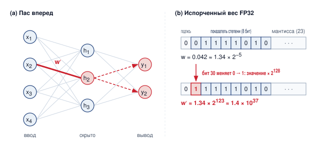
Самые дешёвые поведенческие проверки тестируют инварианты, которым удовлетворяет корректно исполняющаяся модель. Проверка диапазона
↩︎ Защиты «проверь и верифицируй» против тихой порчи данных и их стоимость относительно полной избыточности рассмотрены в Проверки и верификация против незаметного повреждения данных.
14.9.2 Отличение отказов от сдвига и атаки
Эти проверки покрывают отказы, оставляющие числовой след. Более трудный случай — отказ, чей симптом выглядит как проявление одного из других столпов. Рассмотрим оператора, видящего один и тот же поверхностный симптом от всех трёх столпов: падение точности модели при стабильных задержке и доступности. Ошибка предобработки, незаметно меняющая масштаб признака, может выглядеть для монитора дрейфа как ковариативный сдвиг, потому что статистики признака действительно сместились. Числовое переполнение, повреждающее активации слоя, может порождать уверенные неверные классификации, похожие на состязательный пример, потому что решение перевернулось без видимой входной причины. Трудность — в маскировке: дешёвые специфичные для столпов детекторы срабатывают на симптом, а не на причину. Исследование ведут три взаимодополняющих сигнала: временная граница изменения, воспроизводимость при фиксированных входах и межуровневая корреляция с телеметрией инфраструктуры.
Граница и время изменения часто дают первую диагностическую подсказку. Хотя сдвиг среды может развиваться постепенно или появляться резко вместе с реальными событиями, сдвиг, синхронный с развёртыванием, обновлением зависимости или миграцией схемы, выдвигает гипотезу отказа конвейера. Подозрение усиливается, когда несколько признаков сдвигаются одновременно в направлениях, которые лежащий в основе физический процесс объяснить не может. Одно лишь время сужает пространство поиска, не доказывая причинности.
Воспроизводимость при фиксированных входах помогает локализовать границу отказа. Прогон «золотых» входов через привязанные к версиям конвейеры предобработки и артефакты модели может выявить этап, где выходы начинают различаться. Детерминированный программный дефект отказывает на одном и том же этапе при каждом прогоне. Преходящий сбой в вычислениях обычно исчезает при повторе, тогда как повреждённое значение, находящееся в памяти — например, перебитый вес, — воспроизводится на той же реплике и исчезает лишь на другом устройстве или после перезагрузки весов. Гонки потоков и пограничное оборудование отказывают перемежающе, поэтому их изоляция требует повторных прогонов или второго устройства. Стохастическое исполнение также требует управления случайным состоянием или сравнения повторных прогонов. Поскольку сдвинутые или состязательные входы могут воспроизводить ту же ошибку при фиксированных условиях исполнения, один повтор не может завершить диагностику: операторы должны сравнивать сырые и предобработанные тензоры, версии артефактов и статистики по популяции наряду с выводом повтора.
Наконец, межуровневая корреляция связывает поведение модели с телеметрией окружающей инфраструктуры. Всплески частоты запросов или необычные входные шаблоны могут поддержать гипотезу атаки, тогда как релизы развёртывания, счётчики ECC-памяти, детекторы SDC или сигналы о нехватке памяти могут поддержать гипотезу системного сбоя. Ни один из шаблонов не является необходимым или достаточным. Атака может оставаться в пределах нормальных шаблонов трафика, а скрытое повреждение может ускользнуть от имеющихся счётчиков. Корреляция направляет следующий диагностический тест, а не устанавливает причину.
Пример 14.2: Оповещение о дрейфе, оказавшееся сбоем конвейера
Сценарий: Сервис оценки кредитного риска выдаёт оповещения о дрейфе по трём признакам, связанным с доходом, утром после планового обновления зависимости, а доля одобренных заявок в затронутых диапазонах дохода резко меняется. Задержка, частота ошибок и время доступности не меняются, и каждый запрос, который дежурный инженер повторяет вручную, возвращает оценку без ошибки.
Диагноз: Три сигнала указывают в одну сторону. Оповещения начинаются на границе релиза, и три признака изменились согласованно в направлении, которое не объясняется никаким изменением поведения заявителей. Воспроизведение сохранённого набора эталонных запросов через предыдущую и текущую версии конвейера даёт идентичные исходные входы, но предварительно обработанные тензоры различаются на постоянный коэффициент ровно по этим признакам, потому что обновлённая библиотека изменила нормализацию по умолчанию. Телеметрия развёртывания коррелирует с изменением; частота запросов и аппаратные счётчики — нет. Сбой — это программная ошибка, замаскированная под ковариативный сдвиг. Дообучение на повреждённых признаках научило бы модель самой ошибке, а успешные повторы доказывали лишь то, что сервис отвечает, но не то, что его ответы проходят приёмочные проверки.
Системный урок: Стенд воспроизведения, фиксирующий версии артефактов и сравнивающий тензоры на каждом этапе конвейера, превращает неоднозначное оповещение о дрейфе в атрибутируемый сбой. Восстановление завершено только тогда, когда воспроизведённые выходы снова удовлетворяют приёмочным тестам модели — это поведенческая проверка, которую не может обеспечить ни успешный повтор запроса, ни «зелёная» панель состояния.
Парное воспроизведение на Рисунок 15 выделяет первый изменённый этап в этом примере, фиксируя исходные запросы и артефакт модели.
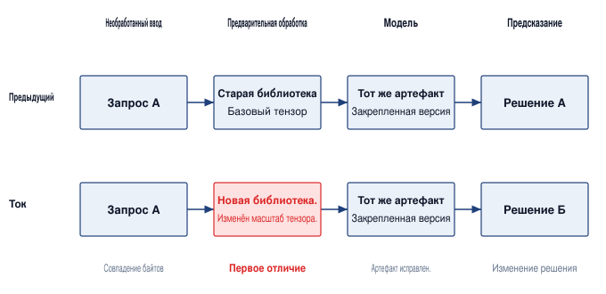
Сравнение только итоговых оценок выявило бы поведенческое изменение, не локализуя его. Сравнение промежуточных тензоров направляет приёмочный тест и откат на предобработку до принятия решения о дообучении.
Диагностическая дисциплина, следовательно, состоит в том, чтобы читать системный уровень свидетельств прежде, чем принять гипотезу дрейфа или атаки, которую подсказывает поверхностный симптом, поскольку каждая опора подсказывает своё вмешательство, и одновременно может быть активна более чем одна причина. Пропуск этой диагностики или принятие пройденного теста на чистых данных или одиночной норме за исчерпывающую защиту порождает рассматриваемые далее повторяющиеся инженерные ловушки.
14.10 Заблуждения и ловушки
Устойчивость охватывает сдвиги среды, атаки на уровне входов и системные сбои. Каждая область угроз порождает заблуждения, ведущие к неадекватной защите или нерациональному расходованию инженерных ресурсов.
Заблуждение: Состязательные примеры — академическая диковинка без практического влияния.
Опубликованные атаки в физическом мире, такие как состязательные заплатки на одежде или наклейки на знаках остановки, обманывали тестируемые модели компьютерного зрения в контролируемых условиях с заплатками и дорожными знаками без цифрового доступа. Защита требует оценки в соответствующих физических условиях. Аугментация данных физического мира, обучение с учётом заплаток и обнаружение на этапе обслуживания — возможные меры, каждая со своим охватом и стоимостью. Состязательное обучение в стиле PGD на цифровых изображениях добавляет работу на каждом шаге атаки, но его результаты не устанавливают устойчивость к физическим атакам. Обычные цифровые тестовые наборы могут пропустить эти режимы отказа развёртывания.
Ловушка: Считать успех на тестовом наборе доказательством устойчивости.
Тестовый набор, взятый из того же i.i.d. распределения, что и обучающие данные, измеряет качество в этой совокупности; он не устанавливает устойчивость к иному распределению развёртывания или к критическому срезу внутри того же распределения. Ошибка маркировки в Google Photos показывает, как вредная ошибка на одном срезе совокупности может скрываться внутри агрегированной точности, а примеры ночного вождения и клинической визуализации сдвига распределения отказывают на совокупностях, недопредставленных в тестовом наборе. Доказательства устойчивости требуют отложенных сдвигов, именованных срезов и остальных ячеек Таблица 1.
Заблуждение: Мониторинг сдвига распределения после развёртывания необязателен.
Модели часто деградируют незаметно, сохраняя высокие значения уверенности, даже когда предсказательное качество падает из-за дрейфа. Мониторинг метрик вроде PSI может выявить сдвиги совокупности до того, как точность опустится ниже порогов соглашения об уровне обслуживания (SLA), позволяя проактивное вмешательство, когда отслеживаемые признаки предсказательны для downstream-качества.
Ловушка: Игнорировать защиту от отравления, если только атакующий не контролирует обучающий конвейер.
Отравление с чистыми метками компрометирует модели, внедряя корректно размеченные, но манипулированные образцы в публичные датасеты или собранные источники данных, не требуя доступа к внутреннему коду. Атаки малой дозы могут по-прежнему нацеливаться на конкретное предсказание или вживлять бэкдор; размер отравленного среза и кажущаяся корректность его меток не устанавливают целостность.
Заблуждение: Средней точности достаточно для измерения устойчивости.
Высокая средняя точность часто маскирует хрупкость. Модель, точная почти на всех чистых тестовых входах, может отказать на каждом входе критического среза, как только атакующий применит малое целенаправленное возмущение (Madry и др. 2018 г.). Надёжная оценка требует свидетельств для заявленного класса отказов: качество на уровне срезов при сдвигах, эмпирическая точность атаки при заданном бюджете или сертифицированный радиус там, где доступна формальная гарантия. Конечный поиск атаки даёт эмпирическое свидетельство, а не точную точность наихудшего случая.
Ловушка: Считать состязательное обучение полным решением задачи устойчивости.
Состязательное обучение не устанавливает универсальную устойчивость. Модель, обученная против атак
Заблуждение: Программные сбои не важны, пока модель корректна.
Сосредоточение исключительно на алгоритмической устойчивости игнорирует реальность того, что программные ошибки в конвейерах данных и обслуживающей инфраструктуре — главная причина отказов ML. Проблемы конвейера и данных, а не архитектура модели или одни лишь состязательные атаки, могут находиться в центре отказов. Контрольные суммы могут обнаружить изменённые байты, тогда как поведенческая валидация должна также ловить некорректные преобразования неповреждённых данных. Модель, укреплённая против состязательных возмущений, может отказать, когда ошибка предобработки подаёт корректно сохранённые, но неверно вычисленные входы.
Ловушка: Укреплять модель, оставляя проверки конвейера непротестированными.
Работа над устойчивостью может сосредоточиться на состязательном обучении, сертифицированных радиусах или защите от отравления, оставляя валидацию схемы, паритет предобработки, свежесть признаков и учения по откату недотестированными. Такой дисбаланс создаёт систему, которая сопротивляется одному классу атак, но отказывает при обычных операционных сбоях. В примере с кредитным риском из Глава 14.9.2 изменившееся значение по умолчанию в библиотеке было бы поймано при выпуске воспроизведением эталонных запросов, сравнивающим предварительно обработанные тензоры между версиями конвейера. Без этой проверки сбой проявился бы как оповещение о дрейфе, и дообучение на повреждённых признаках научило бы модель самой ошибке. Устойчивое развёртывание валидирует модель и конвейер вместе и отрабатывает стенд воспроизведения и путь отката до того, как инцидент потребует их.
14.11 Итоги
Устойчивый ИИ превращает качество предсказаний в явную инженерную обязанность наряду со временем доступности и задержкой. Сдвиги среды, состязательные манипуляции, отравление и системные сбои могут оставлять сервис внешне здоровым, пока его выходы становятся ненадёжными. Диагностический фреймворк главы читает время релиза, воспроизведение с фиксированными входами и телеметрию инфраструктуры прежде, чем принять гипотезу дрейфа или атаки, а затем связывает каждый класс отказов с собственными свидетельствами и ответом. Поэтому механизмы восстановления парка должны сопровождаться поведенческими приёмочными тестами.
Внутри шага обучения устойчивость оплачивается в терминах закона парка (Уравнение (3)). Многошаговый PGD добавляет градиентную работу в
Вне шага обучения те же оси C
Конформное маршрутизирование затрагивает все три оси: вычисление наборов предсказаний добавляет ограниченные вычисления, отправка запросов с большими наборами более сильной модели добавляет коммуникацию, а маршрутизация воздержаний к ревьюерам добавляет координацию. Если наборы предсказаний растут и вызывают больше отложений, пропускная способность человеческого ревью или запасного пути может стать узким местом. Сдвиг распределения также может лишить покрытия, не увеличивая наборы, так что размер набора — сигнал нагрузки, а не полный детектор дрейфа. Заявление о покрытии операционно полезно лишь тогда, когда развёртывание также предоставляет путь, обрабатывающий неопределённые случаи. Инженерия устойчивости измеряет эти специфичные для рабочей нагрузки затраты против снижения скрытого риска там, где последствия отказа наивысшие.
Основные выводы: Скрытый отказ — настоящая угроза
- Молчание — режим отказа: Устойчивость существует потому, что дрейф, состязательные возмущения, отравление и численные сбои часто сохраняют время доступности и задержку, повреждая предсказания. Производственным системам нужны мониторы, выявляющие потерю компетентности до того, как её проявят жалобы пользователей или downstream-бизнес-метрики.
- Диагностируй, прежде чем защищать: Программный сбой может выглядеть как ковариативный сдвиг, отравленный образец — как редкий выброс, а состязательный вход — как естественная вариация. Прочитай время релиза, воспроизведение с фиксированными входами и телеметрию инфраструктуры, прежде чем тратить бюджет защиты на гипотезу, подсказанную поверхностным симптомом, а затем комбинируй валидацию входа, обучающие защиты, сигналы неопределённости и верификацию выходов.
- Устойчивость покупается явно: Сильное состязательное обучение (принцип «Штраф устойчивости по вычислениям») может снизить точность на чистых данных и умножить вычисления обучения, тогда как сертифицированные защиты и выборка по неопределённости добавляют стоимость обслуживания. Оцени каждый эффект против сопоставимого базового уровня, прежде чем решать, сколько устойчивости оправдывают последствия отказа, и заявляй устойчивость только для протестированного доступа атакующего и бюджета возмущений.
- Защита от отравления следует за путём данных: Отравленные записи могут оставлять агрегированную точность на чистых данных нетронутой, поэтому единственного детектора недостаточно. Наслаивай контроль источников, санитизацию, устойчивые целевые функции и пост-обучающие поведенческие проверки и сохраняй lineage, чтобы каждое решение о допуске можно было отследить и отменить.
- Оповещения о дрейфе начинают расследование: Калиброванные меры расстояния выявляют изменения, требующие проверки, но могут молчать при концептуальном дрейфе, не меняющем входное распределение, поэтому свидетельства исходов должны отделять изменение частот меток от изменения отношения входов к меткам. Тип сдвига и анализ первопричины затем определяют, должен ли ответ быть продолжением мониторинга, починкой данных, перекалибровкой, дообучением или запасным путём.
- Контракты на запрос имеют условия эксплуатации: Повышение порога селективного предсказания снижает риск только если оценка ранжирует запросы по риску ошибки, а конформное предсказание даёт конечновыборочное маржинальное покрытие при перестановочности, а не по-входную или по-подгрупповую определённость. Версионируй и обновляй свидетельства калибровки и предоставляй запасную ёмкость для отклонённых запросов и больших наборов предсказаний.
- Генеративная надёжность семантическая: Галлюцинации больших языковых моделей — это уверенно беглые отказы, а не простые ошибки меток. Энтропия и самосогласованность — сигналы маршрутизации, а не гарантии фактичности; проверки заземления, внешняя верификация и политики эскалации должны ограничивать то, что системе позволено утверждать.
Никакая конечная оценка не устанавливает устойчивость к каждому потрясению. Разворачиваемое заявление должно связывать поведенческие свидетельства с протестированным артефактом и условиями эксплуатации, а затем предоставлять пути обнаружения и запасного пути, не нарушая целевые уровни обслуживания (SLO). Запись релиза в Сквозной контракт оценивания сохраняет эту связь, чтобы изменённая модель или рабочая нагрузка не могли незаметно унаследовать устаревшие свидетельства. Управление ссылается на полученную запись как на свидетельство в деле обеспечения (assurance case) — версионируемом аргументе о пригодности модели для заявленного использования. Управление использует это дело, чтобы назначить приемлемый остаточный риск и полномочия принятия решений; сам по себе балл устойчивости таких решений принять не может.
↪ Жизненный цикл обеспечения, превращающий такие свидетельства в решения о запуске и остановке, развивается в Жизненный цикл управления и assurance.
Дальнейшие шаги: От устойчивости к экологичности
Даже когда парк защищён и устойчив, он может быть ограничен электрической мощностью, которую требуют его ускорители. Каждая защита в этой главе оплачивается вычислениями. Состязательное обучение умножает градиентную работу, рандомизированное сглаживание и выборка самосогласованности повторяют инференс, а стенды воспроизведения и избыточные проверки работают рядом с путём обслуживания. Эти вычисления потребляют электричество и выделяют тепло, а мощность и охлаждение площадки ограничивают, сколько из этого парк может выполнять. Следующая глава рассматривает эти пределы как проектные ограничения, начиная с энергетического потолка ёмкости парка и продолжая операционным и «воплощённым» углеродом и углеродно-осознанной эксплуатацией.
↪ Пределы мощности и охлаждения площадки, учёт углерода жизненного цикла и углеродно-осознанное планирование развиваются в Экологически устойчивый ИИ.
использованная литература
Amazon Web Services. 2017 г. Summary of the Amazon S3 Service Disruption in the Northern Virginia (US-EAST-1) Region. AWS service event summary. https://aws.amazon.com/message/41926/.
Bai, Tao, Jinqi Luo, Jun Zhao, Bihan Wen, и Qian Wang. 2021 г. «Recent Advances in Adversarial Training for Adversarial Robustness». Proceedings of the Thirtieth International Joint Conference on Artificial Intelligence, 4312–21. https://doi.org/10.24963/ijcai.2021/591.
Beaton, A. E., и J. W. Tukey. 1974 г. «The Fitting of Power Series, Meaning Polynomials, Illustrated on Band-Spectroscopic Data». Technometrics 16 (2): 147–85. https://doi.org/10.1080/00401706.1974.10489171.
Berger, Vance W., и YanYan Zhou. 2014 г. «Kolmogorov–Smirnov Test: Overview». В Wiley StatsRef: Statistics Reference Online. Wiley. https://doi.org/10.1002/9781118445112.stat06558.
Biggio, Battista, Blaine Nelson, и Pavel Laskov. 2012 г. «Poisoning Attacks against Support Vector Machines». Proceedings of the 29th International Conference on Machine Learning, ICML 2012, Edinburgh, Scotland, UK, June 26 - July 1, 2012. http://icml.cc/2012/papers/880.pdf.
Blanchard, Peva, El Mahdi El Mhamdi, Rachid Guerraoui, и Julien Stainer. 2017 г. «Machine Learning with Adversaries: Byzantine Tolerant Gradient Descent». Advances in Neural Information Processing Systems (NeurIPS), 119–29. https://proceedings.neurips.cc/paper/2017/hash/f4b9ec30ad9f68f89b29639786cb62ef-Abstract.html.
Carlini, Nicholas, и David Wagner. 2017 г. «Towards Evaluating the Robustness of Neural Networks». 2017 IEEE Symposium on Security and Privacy (SP), 39–57. https://doi.org/10.1109/sp.2017.49.
Chen, Ting, Simon Kornblith, Mohammad Norouzi, и Geoffrey Hinton. 2020 г. «A Simple Framework for Contrastive Learning of Visual Representations». Proceedings of the 37th International Conference on Machine Learning, ICML’20, т. 119: 1597–607. http://arxiv.org/abs/2002.05709v3.
Cohen, Jeremy, Elan Rosenfeld, и Zico Kolter. 2019 г. «Certified Adversarial Robustness via Randomized Smoothing». International Conference on Machine Learning (ICML), Proceedings of Machine Learning Research, т. 97: 1310–20. https://proceedings.mlr.press/v97/cohen19c.html.
Croce, Francesco, Maksym Andriushchenko, Vikash Sehwag, и др. 2020 г. «RobustBench: a standardized adversarial robustness benchmark». arXiv preprint arXiv:2010.09670. https://arxiv.org/abs/2010.09670.
Croce, Francesco, и Matthias Hein. 2020 г. «Reliable evaluation of adversarial robustness with an ensemble of diverse parameter-free attacks». arXiv preprint arXiv:2003.01690. https://arxiv.org/abs/2003.01690.
Devlin, Jacob, Ming-Wei Chang, Kenton Lee, и Kristina Toutanova. 2019 г. «BERT: Pre-training of Deep Bidirectional Transformers for Language Understanding». Proceedings of the 2019 Conference of the North American Chapter of the Association for Computational Linguistics: Human Language Technologies, 4171–86. https://doi.org/10.18653/v1/n19-1423.
Dixit, H. D., S. Pendharkar, M. Beadon, и др. 2021 г. Silent Data Corruptions at Scale. arXiv preprint arXiv:2102.11245. https://arxiv.org/abs/2102.11245.
Eykholt, Kevin, Ivan Evtimov, Earlence Fernandes, и др. 2017 г. «Robust Physical-World Attacks on Deep Learning Models». ArXiv preprint abs/1707.08945 (июль). http://arxiv.org/abs/1707.08945v5.
Eykholt, K., I. Evtimov, E. Fernandes, и др. 2018 г. «Robust Physical-World Attacks on Deep Learning Visual Classification». 2018 IEEE/CVF Conference on Computer Vision and Pattern Recognition 1707.08945: 1625–34. https://doi.org/10.1109/cvpr.2018.00175.
Federal Aviation Administration. 2015 г. Airworthiness Directive: Boeing 787 Generator Control Units Failsafe Reset. FAA Airworthiness Directive 2015-10066. https://s3.amazonaws.com/public-inspection.federalregister.gov/2015-10066.pdf.
Gal, Yarin, и Zoubin Ghahramani. 2016 г. «Dropout as a Bayesian Approximation: Representing Model Uncertainty in Deep Learning». Proceedings of the 33rd International Conference on Machine Learning (ICML) 48: 1050–59. https://proceedings.mlr.press/v48/gal16.html.
Gama, João, Indrė Žliobaitė, Albert Bifet, Mykola Pechenizkiy, и Abdelhamid Bouchachia. 2014 г. «A survey on concept drift adaptation». ACM Computing Surveys 46 (4): 1–37. https://doi.org/10.1145/2523813.
Goodfellow, I. J., J. Shlens, и C. Szegedy. 2015 г. «Explaining and Harnessing Adversarial Examples». International Conference on Learning Representations (ICLR). https://arxiv.org/abs/1412.6572.
Gu, Tianyu, Brendan Dolan-Gavitt, и Siddharth Garg. 2017 г. «BadNets: Identifying Vulnerabilities in the Machine Learning Model Supply Chain». arXiv preprint arXiv:1708.06733. http://arxiv.org/abs/1708.06733v2.
Guo, Chuan, Geoff Pleiss, Yu Sun, и Kilian Q. Weinberger. 2017 г. «On Calibration of Modern Neural Networks». International Conference on Machine Learning (ICML) 70: 1321–30. https://proceedings.mlr.press/v70/guo17a.html.
He, K., X. Chen, S. Xie, Y. Li, P. Dollár, и R. Girshick. 2021 г. «Masked Autoencoders Are Scalable Vision Learners». 2022 IEEE/CVF Conference on Computer Vision and Pattern Recognition (CVPR) 18: 15979–88. https://doi.org/10.1109/cvpr52688.2022.01553.
Hendrycks, Dan, и Thomas Dietterich. 2019 г. «Benchmarking Neural Network Robustness to Common Corruptions and Perturbations». arXiv preprint arXiv:1903.12261. http://arxiv.org/abs/1903.12261v1.
Hendrycks, Dan, и Kevin Gimpel. 2017 г. «A Baseline for Detecting Misclassified and Out-of-Distribution Examples in Neural Networks». International Conference on Learning Representations (ICLR). https://openreview.net/forum?id=Hkg4TI9xl.
Hinton, G. E., N. Srivastava, A. Krizhevsky, I. Sutskever, и R. R. Salakhutdinov. 2012 г. «Improving neural networks by preventing co-adaptation of feature detectors». arXiv preprint arXiv:1207.0580. http://arxiv.org/abs/1207.0580v1.
Kasperkevic, Jana. 2015 г. «Google Says Sorry for Racist Auto-Tag in Photo App». The Guardian, июль. https://www.theguardian.com/technology/2015/jul/01/google-sorry-racist-auto-tag-photo-app.
Kirkpatrick, J., R. Pascanu, N. Rabinowitz, и др. 2017 г. «Overcoming catastrophic forgetting in neural networks». Proceedings of the National Academy of Sciences 114 (13): 3521–26. https://doi.org/10.1073/pnas.1611835114.
Koh, Pang Wei, и Percy Liang. 2017 г. «Understanding Black-box Predictions via Influence Functions». International Conference on Machine Learning (ICML), Proceedings of Machine Learning Research, т. 70: 1885–94. http://arxiv.org/abs/1703.04730.
Lakshminarayanan, Balaji, Alexander Pritzel, и Charles Blundell. 2017 г. «Simple and Scalable Predictive Uncertainty Estimation Using Deep Ensembles». Advances in Neural Information Processing Systems (NeurIPS) 30. https://papers.nips.cc/paper/2017/hash/9ef2ed4b7fd2c810847ffa5fa85bce38-Abstract.html.
Lee, Peter. 2016 г. Learning from Tay’s Introduction. The Official Microsoft Blog. https://blogs.microsoft.com/blog/2016/03/25/learning-tays-introduction/.
Lei, Jing, Max G’Sell, Alessandro Rinaldo, Ryan J. Tibshirani, и Larry Wasserman. 2018 г. «Distribution-Free Predictive Inference for Regression». Journal of the American Statistical Association 113 (523): 1094–111. https://doi.org/10.1080/01621459.2017.1307116.
Lipton, Zachary, Yu-Xiang Wang, и Alexander Smola. 2018 г. «Detecting and Correcting for Label Shift with Black Box Predictors». International Conference on Machine Learning (ICML), 3122–30. http://proceedings.mlr.press/v80/lipton18a.html.
Ma, Jeffrey, Hengzhi Pei, Leonard Lausen, и George Karypis. 2025 г. Understanding Silent Data Corruption in LLM Training. https://doi.org/10.48550/arXiv.2502.12340.
Madry, Aleksander, Aleksandar Makelov, Ludwig Schmidt, Dimitris Tsipras, и Adrian Vladu. 2018 г. «Towards Deep Learning Models Resistant to Adversarial Attacks». International Conference on Learning Representations (ICLR). https://openreview.net/forum?id=rJzIBfZAb.
Moosavi-Dezfooli, Seyed-Mohsen, Alhussein Fawzi, и Pascal Frossard. 2015 г. «DeepFool: a simple and accurate method to fool deep neural networks». 2016 IEEE Conference on Computer Vision and Pattern Recognition (CVPR) 2016: 2574–82. https://doi.org/10.1109/cvpr.2016.282.
Mu, Norman, и Justin Gilmer. 2019 г. MNIST-C: A Robustness Benchmark for Computer Vision. https://arxiv.org/abs/1906.02337.
NASA Mars Program Independent Assessment Team. 2000 г. Report on the Loss of the Mars Polar Lander and Deep Space 2 Missions. National Aeronautics; Space Administration. https://ntrs.nasa.gov/api/citations/20000061966/downloads/20000061966.pdf.
National Transportation Safety Board. 2017 г. Collision Between a Car Operating With Automated Vehicle Control Systems and a Tractor-Semitrailer Truck Near Williston, Florida, May 7, 2016. HAR-17/02. National Transportation Safety Board. https://www.ntsb.gov/investigations/AccidentReports/Reports/HAR1702.pdf.
National Transportation Safety Board. 2019 г. Collision Between Vehicle Controlled by Developmental Automated Driving System and Pedestrian, Tempe, Arizona, March 18, 2018. HAR-19/03. National Transportation Safety Board. https://www.ntsb.gov/investigations/AccidentReports/Reports/HAR1903.pdf.
Neumann, John von. 1928 г. «Zur Theorie Der Gesellschaftsspiele». Mathematische Annalen 100 (1): 295–320. https://doi.org/10.1007/bf01448847.
Oprea, Alina, Anoop Singhal, и Apostol Vassilev. 2022 г. «Poisoning Attacks Against Machine Learning: Can Machine Learning Be Trustworthy?» Computer 55 (11): 94–99. https://doi.org/10.1109/mc.2022.3190787.
Pan, Sinno Jialin, и Qiang Yang. 2010 г. «A Survey on Transfer Learning». IEEE Transactions on Knowledge and Data Engineering 22 (10): 1345–59. https://doi.org/10.1109/tkde.2009.191.
Papernot, Nicolas, Patrick McDaniel, Xi Wu, Somesh Jha, и Ananthram Swami. 2016 г. «Distillation as a Defense to Adversarial Perturbations Against Deep Neural Networks». 2016 IEEE Symposium on Security and Privacy (SP), 582–97. https://doi.org/10.1109/sp.2016.41.
Papernot, N., P. McDaniel, S. Jha, M. Fredrikson, Z. Berkay Celik, и A. Swami. 2016 г. «The Limitations of Deep Learning in Adversarial Settings». 2016 IEEE European Symposium on Security and Privacy (EuroS&P), 372–87. https://doi.org/10.1109/eurosp.2016.36.
Quiñonero-Candela, Joaquin, Masashi Sugiyama, Anton Schwaighofer, и Neil D. Lawrence, ред. 2009 г. Dataset Shift in Machine Learning. Neural Information Processing series. The MIT Press. https://mitpress.mit.edu/9780262545877/dataset-shift-in-machine-learning/.
Recht, Benjamin, Rebecca Roelofs, Ludwig Schmidt, и Vaishaal Shankar. 2019 г. «Do ImageNet Classifiers Generalize to ImageNet?» Proceedings of the 36th International Conference on Machine Learning (ICML), 5389–400. https://proceedings.mlr.press/v97/recht19a.html.
Saltzer, J. H., и M. D. Schroeder. 1975 г. «The Protection of Information in Computer Systems». Proceedings of the IEEE 63 (9): 1278–308. https://doi.org/10.1109/proc.1975.9939.
Shafahi, Ali, Mahyar Najibi, Amin Ghiasi, и др. 2019 г. «Adversarial Training for Free!» arXiv preprint arXiv:1904.12843, advance online publication. https://doi.org/10.48550/arXiv.1904.12843.
Shalev-Shwartz, S. 2012 г. «Online Learning and Online Convex Optimization». Foundations and Trends in Machine Learning 4 (2): 107–94. https://doi.org/10.1561/2200000018.
Shan, S., W. Ding, J. Passananti, S. Wu, H. Zheng, и B. Y. Zhao. 2023 г. «Nightshade: Prompt-Specific Poisoning Attacks on Text-To-Image Generative Models». 2024 IEEE Symposium on Security and Privacy (SP) abs/2310.13828: 807–25. https://doi.org/10.1109/sp54263.2024.00207.
Szegedy, Christian, Wojciech Zaremba, Ilya Sutskever, и др. 2013 г. «Intriguing properties of neural networks». arXiv preprint arXiv:1312.6199. http://arxiv.org/abs/1312.6199v4.
Taori, Rohan, Achal Dave, Vaishaal Shankar, Nicholas Carlini, Benjamin Recht, и Ludwig Schmidt. 2020 г. «Measuring Robustness to Natural Distribution Shifts in Image Classification». arXiv preprint arXiv:2007.00644. https://arxiv.org/abs/2007.00644.
Tramèr, Florian, Alexey Kurakin, Nicolas Papernot, Ian Goodfellow, Dan Boneh, и Patrick McDaniel. 2017 г. «Ensemble Adversarial Training: Attacks and Defenses». International Conference on Learning Representations abs/1705.07204. http://arxiv.org/abs/1705.07204v5.
Tran, Brandon, Jerry Li, и Aleksander Madry. 2018 г. «Spectral Signatures in Backdoor Attacks». Advances in Neural Information Processing Systems (NeurIPS).
Tsai, Min-Jen, Ping-Yi Lin, и Ming-En Lee. 2023 г. «Adversarial Attacks on Medical Image Classification». Cancers 15 (17): 4228. https://doi.org/10.3390/cancers15174228.
Widmer, Gerhard, и Miroslav Kubat. 1996 г. «Learning in the Presence of Concept Drift and Hidden Contexts». Machine Learning 23 (1): 69–101. https://doi.org/10.1023/a:1018046501280.
Xu, Weilin, David Evans, и Yanjun Qi. 2018 г. «Feature Squeezing: Detecting Adversarial Examples in Deep Neural Networks». Proceedings 2018 Network and Distributed System Security Symposium 26. https://doi.org/10.14722/ndss.2018.23198.
Yin, Dong, Yudong Chen, Kannan Ramchandran, и Peter Bartlett. 2018 г. «Byzantine-robust distributed learning: Towards optimal statistical rates». International Conference on Machine Learning (ICML), 5650–59.
Yurdakul, Bilal, и Joshua Naranjo. 2020 г. «Statistical properties of the population stability index». The Journal of Risk Model Validation 52. https://doi.org/10.21314/jrmv.2020.227.
Zou, Andy, Zifan Wang, Nicholas Carlini, Milad Nasr, J. Zico Kolter, и Matt Fredrikson. 2023 г. Universal and Transferable Adversarial Attacks on Aligned Language Models. https://arxiv.org/abs/2307.15043.
Сноски
Системная уязвимость: общая зависимость может подвергнуть множество компонентов одному и тому же дефекту или атаке. Фиксация одной версии CUDA или PyTorch во всём парке делает эту версию общей зависимостью, но успешная эксплуатация всё равно зависит от затронутых путей кода, конфигурации и доступа атакующего. Инвентаризация зависимостей и поэтапные обновления помогают выявить и локализовать затронутую популяцию; одна лишь репликация не устраняет общую слабость.↩ Вернуться к тексту
Отказ AWS S3 (2017): неверно набранная команда при рутинном обслуживании удалила слишком много ёмкости из подсистем индексации и размещения S3 в US-East-1. Пока эти подсистемы перезапускались, S3 не мог обслуживать запросы, а зависимые сервисы AWS испытывали повышенный уровень ошибок или ограниченную функциональность. Инцидент обнажил паттерн однорегиональной зависимости: системы, считающие доступность регионального хранилища инвариантом, могут отказать, даже когда их собственный код приложения и логика обслуживания моделей остаются неизменными.↩ Вернуться к тексту
Отказобезопасный механизм: Механизм, переводящий систему в валидированное безопасное состояние при обнаружении отказа. Возможные компоненты — автоматические предохранители (circuit breakers), резервная модель, отказ и откат, но ни один из них не является безопасным по умолчанию для любого приложения. Сервис должен установить, что выбранная реакция удовлетворяет ограничениям опасности и времени; пороговые значения для отказов также балансируют принятую рабочую нагрузку против остаточной ошибки и пропускной способности разбора инцидентов.↩ Вернуться к тексту
ASIL (уровни целостности автомобильной безопасности): ISO 26262 использует уровни целостности автомобильной безопасности (ASIL) для масштабирования обязательств функциональной безопасности по результатам анализа опасностей. ASIL D — самый строгий уровень, но это не универсальный процент надёжности компонентов. Компонент восприятия на базе ML усложняет итоговую аргументацию безопасности, поскольку его поведение зависит от операционного распределения и не может быть обосновано только агрегированной точностью на тестах.↩ Вернуться к тексту
Инженерия надёжности: Использует модели отказов и анализ режимов отказов, чтобы связать поведение компонентов с исходами системы. В последовательной модели надёжность системы равна
, когда все компоненты должны выжить, отказы независимы и каждый имеет одну и ту же постоянную экспоненциальную интенсивность отказов. Развёртываниям ML также нужны поведенческие свидетельства для дрейфа, подготовленных входов и неопределённости; сама по себе модель выживания компонентов эти режимы отказов не покрывает.↩ Вернуться к тексту Максимальное среднее расхождение (MMD): Расхождение между ядерными средними представлениями распределений, используемое для построения двухвыборочных тестов. Ядро на входных векторах позволяет MMD реагировать на изменения совместного распределения, которые может пропустить сравнение по отдельным признакам; чувствительность зависит от ядра и калибровки теста. Прямое попарное оценивание стоит
по размеру выборки, тогда как линейные по времени оценки и аппроксимации разменивают вычисления на статистическую эффективность.↩ Вернуться к тексту Человеческое vs. машинное восприятие: Впервые выделено в Szegedy и др. (2013 г.): нейронные сети выучивают статистические корреляции в пиксельном пространстве, а не семантические инвариантности, которые навязывает человеческое зрение. Согласие на чистых примерах не устанавливает согласия при каждом малом изменении изображения. Поэтому оценка должна указывать, какие преобразования должны сохранять метку, и проверять, сохраняет ли модель это поведение; обучение на основе градиентов само по себе не объясняет каждую атаку и не гарантирует требуемую инвариантность.↩ Вернуться к тексту
Метод быстрого градиентного знака (FGSM): Предложен в Goodfellow и др. (2015 г.) на ICLR; FGSM генерирует состязательные примеры за один градиентный шаг, что делает его практичным во время обучения. Эта двойная роль — его устойчивое системное значение: та же атака, что выявила хрупкость нейронных сетей, стала простым примитивом состязательного обучения, где возмущения, сгенерированные FGSM, дополняют чистые батчи примерами, выбранными для увеличения потерь.↩ Вернуться к тексту
Атака в белом ящике (white-box): Состязательная атака при полном знании модели (архитектура, веса, градиенты); такие методы, как PGD и Carlini-Wagner (C&W), сильны потому, что они оптимизируют непосредственно против модели, а не прощупывают её извне. Хотя для многих развёрнутых систем такой сценарий менее реалистичен, чем атака в чёрном ящике, анализ в белом ящике задаёт требовательный эталон в рамках заданной нормы, бюджета возмущения и процедуры атаки. Прохождение PGD — это доказательство для данной модели угроз, а не универсальная гарантия против любой более «слабой на вид» атаки.↩ Вернуться к тексту
Атака Карлини и Вагнера (C&W): Предложенная в 2016 году (IEEE S&P 2017), C&W формулирует генерацию состязательных примеров как задачу условной оптимизации, которая ищет малое возмущение, вызывающее ошибочную классификацию, не гарантируя глобального минимума. Её значение методологическое: C&W взломала дистилляцию для защиты (раннюю защиту, маскировавшую градиенты, чтобы притупить более слабые атаки) и другие оценённые защиты, установив принцип, согласно которому заявления об устойчивости должны проверяться против атак, основанных на оптимизации, а не только против эвристик со знаком градиента.↩ Вернуться к тексту
Липшицева непрерывность: математическое свойство, ограничивающее, насколько может измениться выход функции при данном изменении входа (
). Малая константа Липшица ограничивает смещение баллов, но сама по себе не предотвращает смену метки. Уменьшение может увеличить сертифицированный радиус, хотя принудительное удержание низкой константы может стоить точности на чистых данных и добавить стоимость обучения.↩ Вернуться к тексту Сжатие признаков: в оригинальной оценке (Xu и др. 2018 г.) сжатие 256 цветовых уровней до 16 или медианная фильтрация устраняли многие адверсариальные примеры при сохранении высокой точности на чистых данных. Те же преобразования могут удалять полезные признаки чистых входов и не покрывают каждый механизм атаки, поэтому адаптивные атаки, предвидящие сжиматель, требуют отдельной валидации, прежде чем считать защиту готовой к продакшену.↩ Вернуться к тексту
Неопределённость модели (эпистемическая неопределённость): неопределённость, связанная с ограниченным знанием предсказательной модели; отличают от aleatoric-неопределённости в наблюдениях. Оценка может поддерживать эскалацию, но её нужно проверять на фактических ошибках и незнакомых входах; низкая оценка не сертифицирует компетентность. Оценщики с повторными проходами или ансамблями добавляют работу инференса, а любой человеческий резерв должен укладываться в дедлайн отклика приложения.↩ Вернуться к тексту
Monte Carlo dropout: предложен в Gal и Ghahramani (2016 г.); MC dropout переосмысляет dropout как приближённый байесовский инференс, оставляя dropout активным при повторных стохастических прямых проходах. Дисперсия предсказаний даёт оценку неопределённости без архитектурных изменений. Каждая дополнительная выборка добавляет работу инференса, поэтому развёртывания должны выбирать число выборок под свои бюджеты задержки и неопределённости.↩ Вернуться к тексту
Принцип наименьших привилегий: сформулирован в Saltzer и Schroeder (1975 г.); этот принцип ограничивает права доступа минимумом, необходимым каждому компоненту. В ML-конвейере обучающее задание, которому разрешено читать непроверенные источники, имеет дополнительный путь, через который адверсариальные данные могут попасть в систему, поэтому права записи и чтения становятся частью поверхности атаки отравлением. Тот же принцип управляет реестром моделей — хранилищем артефактов, которое сопоставляет идентификаторы версий файлам весов и определяет, какой псевдоним (например,
staging,production) разрешается в какую контрольную точку. Продвижение в псевдонимproductionследует ограничить узким, поддающимся аудиту набором автоматизированных сервисов оценивания и поименованных инженеров релизов; если учётные данные исследователя скомпрометированы, исключение этих учётных данных из полномочий на продвижение блокирует прямой путь к подмене живой модели, в то время как прочие авторизованные пути всё ещё требуют проверки.↩ Вернуться к текстуФункция Хубера: Эта кусочная функция потерь переходит от квадратичной к линейной за выбранным порогом остаточной ошибки, ограничивая свою производную по остатку. Градиент по параметрам также умножает эту производную на якобиан предсказания модели, поэтому одна лишь функция Хубера не ограничивает обновления параметров и не предотвращает отравление. При MSE выброс с 100× нормальной ошибкой вносит 10,000× вклад в квадратичные потери и имеет величину остаточного градиента 100×. При функции Хубера, когда остаток превышает порог, потери растут лишь линейно, а производная по остатку остаётся на уровне порогового значения, поэтому тот же выброс тянет не сильнее любой другой точки за порогом.↩ Вернуться к тексту
Минимакс: Теоретико-игровая стратегия из работы Neumann (1928 г.), минимизирующая максимально возможные потери. В состязательной устойчивости Madry и др. (2018 г.) формулируют обучение как
: модель учится минимизировать потери при возмущении наихудшего случая внутри выбранного шара по норме. Внутренняя максимизация вычислительно дорога, поскольку обычно аппроксимируется итеративными атаками вроде PGD, поэтому PGD-состязательное обучение — это выбор устойчивости за счёт бюджета, а не бесплатное изменение цели (Bai и др. 2021 г.; Shafahi и др. 2019 г.).↩ Вернуться к тексту